QTL mapping pipeline
Introduction
We take a modular approach to call QTLs:
- Estimate a mean and a dispersion for each individual
- Treat the mean/dispersion as continuous phenotypes and perform QTL mapping
Here, we solve (2).
- We reproduce eQTLs called on the bulk RNA-Seq
- We call mean/variance/CV/Fano QTLs using ZINB parameters
- We call QTLs using counts and log CPM
- We explain away variance QTLs
- We test replication/overlap between different QTL calls
Implementation
def cpm(x): return pd.DataFrame(pandas2ri.ri2py(edger.cpm(numpy2ri(x.values), log=True)), columns=x.columns, index=x.index) def qqnorm(x): """Wrap around R qqnorm""" return np.asarray(rpy2.robjects.r['qqnorm'](numpy2ri(x))[0]) def bh(x): """Wrap around p.adjust(..., method='fdr')""" return np.asarray(rpy2.robjects.r['p.adjust'](numpy2ri(x), method='fdr'))
gene_info = (pd.read_table('/project2/mstephens/aksarkar/projects/singlecell-qtl/data/scqtl-genes.txt.gz') .set_index('gene') .query('source == "H. sapiens"') .query('chr != "hsX"') .query('chr != "hsY"') .query('chr != "hsMT"'))
with sqlite3.connect('/project2/mstephens/aksarkar/projects/singlecell-qtl/browser/browser.db') as conn: gene_info.to_sql('gene_info', conn, index=True, if_exists='replace')
def qtltools_format(row, prefix='chr'): row['#Chr'] = '{}{}'.format(prefix, row['chr'][2:]) row['gid'] = row.name row['pid'] = row.name # Important: qtltools expects TSS start/end if row['strand'] == '+': row['end'] = row['start'] else: row['start'] = row['end'] return row.loc[['#Chr', 'start', 'end', 'pid', 'gid', 'strand']] def write_pheno_file(pheno, gene_info, output_file, holdout=True, **kwargs): if holdout: genes = gene_info.loc[gene_info.apply(lambda x: bool(int(x['chr'][2:]) % 2), axis=1)] else: genes = gene_info (genes .apply(qtltools_format, **kwargs, axis=1) .merge(pheno, left_index=True, right_index=True) .to_csv(output_file, sep='\t', header=True, index=False, index_label=False))
export input=$input sbatch --partition=$partition --wait #!/bin/bash module load bedtools bedtools sort -header -i $input | bgzip >$input.gz tabix -f -p bed $input.gz
export pheno=$pheno export geno=$geno export op=$op sbatch --partition=$partition -a 1-100 -J $pheno-qtl --wait #!/bin/bash source activate scqtl qtltools cis --vcf $geno --bed $pheno.bed.gz $op --chunk $SLURM_ARRAY_TASK_ID 100 --out $pheno-qtl.$SLURM_ARRAY_TASK_ID.txt --seed 0
def _read_helper(pheno, columns): file_names = ['{}-qtl.{}.txt'.format(pheno, i) for i in range(1, 101)] res = (pd.concat([pd.read_table(f, header=None, sep=' ') for f in file_names if os.path.exists(f) and os.path.getsize(f) > 0]) .rename(columns={i: x for i, x in enumerate(columns)}) .dropna() .sort_values('p_beta')) res['p_adjust'] = bh(res['p_beta']) res['fdr_pass'] = res['p_adjust'] < 0.1 return res def read_fastqtl_output(pheno): columns = ['gene', 'num_snps', 'a', 'b', 'dummy', 'id', 'distance', 'p', 'beta', 'p_empirical', 'p_beta'] res = _read_helper(pheno, columns) # Drop the gene version number res['gene'] = res['gene'].apply(lambda x: x.split('.')[0]) res['chr'] = res['id'].apply(lambda x: x.split('.')[1]) res['pos'] = res['id'].apply(lambda x: x.split('.')[2]) res['id'] = res['id'].apply(lambda x: x.split('.')[0]) return res def read_qtltools_output(pheno): columns = ['gene', 'chr', 'start', 'end', 'strand', 'num_vars', 'distance', 'id', 'var_chr', 'var_start', 'var_end', 'df', 'dummy', 'a', 'b', 'p_nominal', 'beta', 'p_empirical', 'p_beta'] res = _read_helper(pheno, columns) res['chr'] = res['var_chr'] res['pos'] = res['var_start'] res['id'] = res['id'].apply(lambda x: x.split('.')[0]) return res def read_nominal_pass(f): isf = st.chi2(1).isf result = pd.read_table(f, sep=' ', header=None) result.columns = ['gene', 'chr', 'start', 'end', 'strand', 'n', 'distance', 'id', 'var_chr', 'var_start', 'var_end', 'p_nominal', 'beta', 'top'] result['z'] = np.sign(result['beta']) * np.sqrt(isf(result['p_nominal'])) return result
def plot_approx_permutation(df): plt.clf() plt.gcf().set_size_inches(6, 6) plt.scatter(df['p_empirical'], df['p_beta'], s=1, c='k') plt.plot([0, 1], [0, 1], c='r', ls='--') plt.xlabel('Empirical p-value') plt.ylabel('Approximate p-value')
def qqplot(qtls): N = qtls.shape[0] # 95% bootstrap CI ci = -np.log10(np.percentile(np.sort(np.random.uniform(size=(100, N)), axis=1), [5, 95], axis=0)) grid = -np.log10(np.arange(1, 1 + N) / N) plt.clf() plt.gcf().set_size_inches(6, 6) plt.scatter(grid, -np.log10(qtls['p_beta']), s=1, c='k') plt.plot([0, np.log10(qtls.shape[0])], [0, np.log10(qtls.shape[0])], c='r', ls='--') plt.plot(grid, ci[0], c='r', ls=':') plt.plot(grid, ci[1], c='r', ls=':') plt.xlabel('Expected $-\log_{10}(p)$') _ = plt.ylabel('Observed $-\log_{10}(p)$')
def parse_vcf_dosage(record): geno = [float(g) for g in record[9:]] return pd.Series(geno) def extract_qtl_gene_pair(qtl_gene_df, pheno_df, dosages): """Return aligned genotype and phenotype matrix for each QTL-gene pair in qtl_gene_df""" common_phenos, common_qtls = pheno_df.align(qtl_gene_df.set_index('gene'), join='inner', axis=0) # Important: assume individual IDs are prefixed by "NA". This isn't true in # the original VCF header = pd.read_table(dosages, skiprows=2, nrows=1, header=0).columns[9:] genotypes = tabix.open(dosages) X, Y = (common_qtls .apply(lambda x: parse_vcf_dosage(next(genotypes.query(x['chr'], int(x['var_start']) - 1, int(x['var_start'])))), axis=1) .rename(columns={i: ind for i, ind in enumerate(header)}) .align(common_phenos, join='inner', axis=None)) return X, Y def replication_tests(X, Y, C=None): """Return a DataFrame containing replication p-values X - centered dosage matrix (num_genes, num_individuals) Y - phenotype matrix (num_genes, num_individuals) C - confounder matrix (num_confounders, num_individuals) """ p, n = X.shape assert Y.shape == (p, n) if C is not None: assert C.shape[1] == n C = np.array(C).T C = C - C.mean(axis=0) # Construct the annihilator matrix I - X X^+ M = np.eye(n) - C.dot(np.linalg.pinv(C)) result = [] _sf = st.chi2(1).sf for (_, x), (name, y) in zip(X.iterrows(), Y.iterrows()): if np.isclose(x.std(), 0): print('Skipping {}'.format(name)) continue x = x.values.copy().reshape(-1, 1) x -= x.mean() y = y.values.copy().ravel() y -= y.mean() if C is not None: y = M.dot(y) y -= y.mean() beta, rss, *_ = np.linalg.lstsq(x, y, rcond=-1) sigma2 = rss / y.shape[0] se = sigma2 / x.T.dot(x).ravel() pval = _sf(np.square(beta / se)) result.append({'gene': name, 'beta': beta[0], 'se': se[0], 'p': pval.ravel()[0]}) return pd.DataFrame.from_dict(result) def pairwise_replication(qtls, phenos, ticks, covars=None): if covars is not None: assert len(covars) == len(phenos) assert len(phenos) == len(ticks) repl_rate = np.ones((len(phenos), len(phenos))) for i, ki in enumerate(phenos): for j, kj in enumerate(phenos): if i == j: continue q, p = qtls[ki][0], qtls[kj][1] X, Y = extract_qtl_gene_pair(q[q['fdr_pass']], p, dosages='/scratch/midway2/aksarkar/singlecell/scqtl-mapping/yri-120-dosages.vcf.gz') if X.empty: continue if covars is not None and covars[j] is not None: C = covars[j].align(X, axis='columns', join='inner')[0] else: C = None replication = q.merge( replication_tests(X, Y, C), on='gene', suffixes=['_1', '_2'])[['gene', 'id', 'beta_1', 'beta_2', 'p']] replication['fdr_pass'] = bh(replication['p']) < .1 replication['replicated'] = replication.apply(lambda x: x['fdr_pass'] and x['beta_1'] * x['beta_2'] > 0, axis=1) repl_rate[i, j] = replication['replicated'].sum() / replication.shape[0] return pd.DataFrame(100 * repl_rate, columns=ticks, index=ticks)
def bootstrap_se(X, Y, C=None, num_bootstraps=100, seed=0): np.random.seed(seed) beta = {} for i in range(num_bootstraps): b = np.random.choice(X.shape[1], size=X.shape[1], replace=True) if C is not None: beta[i] = replication_tests(X.iloc[:,b], Y.iloc[:,b], C.iloc[:,b]).set_index('gene')['beta'] else: beta[i] = replication_tests(X.iloc[:,b], Y.iloc[:,b]).set_index('gene')['beta'] return pd.DataFrame.from_dict(beta).agg(np.std, axis=1)
def _fit_lm(x, y): n, p = x.shape assert y.shape == (n, 1) y -= y.mean() x -= x.mean(axis=0) beta = x.T.dot(y) / np.var(x, axis=0).values.reshape(-1, 1) return beta def estimate_beta_se(genes, dosages, gene_info, covars=None, window=100000, n_bootstrap=100, seed=0): """Estimate beta via OLS and SE via bootstrap genes - dataframe (num_genes, num_individuals) dosages - VCF file name gene_info - dataframe (see read_gene_info) covars - dataframe (num_covars, num_individuals) """ with gzip.open(dosages, 'rt') as f: for line in f: if line.startswith('#CHROM'): header = line.split()[9:] break dosages = tabix.open(dosages) if covars is not None: covars, genes = covars.align(genes, axis='columns', join='inner') _, n = covars.shape covars = covars.values.T M = np.eye(n) - covars.dot(np.linalg.pinv(covars)) result = [] for gene, Y in genes.iterrows(): if gene in gene_info.index: record = gene_info.loc[gene] if record['strand'] == '+': X = dosages.query('chr{}'.format(record['chr'][2:]), record['start'] - window, record['start'] + window) else: X = dosages.query('chr{}'.format(record['chr'][2:]), record['end'] - window, record['end'] + window) X = list(X) meta = [row[2] for row in X] X = pd.DataFrame([parse_vcf_dosage(row) for row in X]) X.index = meta X.columns = header X, Y = X.align(Y, axis='columns', join='inner') if covars is not None: Y = M.dot(Y - Y.mean()) X = X.transform(lambda x: x - x.mean(), axis=1) beta = [_fit_lm(X.T, Y.reshape(-1, 1))] np.random.seed(seed) for _ in range(n_bootstrap): B = np.random.choice(n, size=n, replace=True) beta.append(_fit_lm(X.iloc[:,B].T, Y[B].reshape(-1, 1))) result.append(pd.DataFrame({'gene': gene, 'snp': meta, 'beta': beta[0].values.ravel(), 'se': np.std(np.ma.masked_invalid(np.hstack(beta[1:])), axis=1)})) return pd.concat(result)
Preliminaries
Test validity of approximate permutation test
qtltools tries to calibrate false discovery rates using the following
procedure:
- For each gene, permute the genotype data to estimate the null distribution of the p-values
- Fit a beta distribution to the permuted p-values via ML
- Compute the lower tail probability of the observed p-value, assuming it was generated from the fitted beta distribution
- Apply FDR correction on the set of lower tail probabilities (across all genes)
Test whether the beta approximation is appropriate for our sample size by subsetting GEUVADIS. Take all genes on chromosome 1.
geuvadis = [] for chunk in pd.read_table('/project/compbio/geuvadis/analysis_results/GD462.GeneQuantRPKM.50FN.samplename.resk10.txt.gz', chunksize=100): geuvadis.append(chunk.query('Chr == "1"')) geuvadis = pd.concat(geuvadis) geuvadis = geuvadis.set_index(geuvadis['Gene_Symbol'].apply(lambda x: x.split('.')[0]))
First, replicate the result in Delaneau et al 2017 by using all 462 individuals from GEUVADIS.
pd.Series(geuvadis.columns).sort_values().to_csv('/scratch/midway2/aksarkar/singlecell/geuvadis/geuvadis-subset.txt', header=None, index=None)
Write out the phenotype file for qtltools. Important: GEUVADIS VCFs code
chromosome without chr.
write_pheno_file(geuvadis, gene_info, '/scratch/midway2/aksarkar/singlecell/geuvadis/test.bed', prefix='')
Index the phenotype file. Important: # sorts before c, but after 1.
Submitted batch job 44542169
Perform SNP QC in plink.
sbatch --partition=broadwl --mem=2G --wait #!/bin/bash plink --memory 2000 --geno 0.01 --maf 0.05 --keep-fam /scratch/midway2/aksarkar/singlecell/geuvadis-subset.txt --vcf /project/compbio/geuvadis/genotypes/GEUVADIS.chr1.PH1PH2_465.IMPFRQFILT_BIALLELIC_PH.annotv2.genotypes.vcf.gz --recode vcf-iid --out geuvadis-chr1 bgzip -f geuvadis-chr1.vcf tabix -f -p vcf geuvadis-chr1.vcf.gz
Submitted batch job 44541229
Run qtltools.
Submitted batch job 44685856
Read the results.
geuvadis_qtls = read_qtltools_output('geuvadis/test')
Check the beta approximation to the permutation p-values.
plot_approx_permutation(geuvadis_qtls)

Plot the QQ plot
qqplot(geuvadis_qtls)
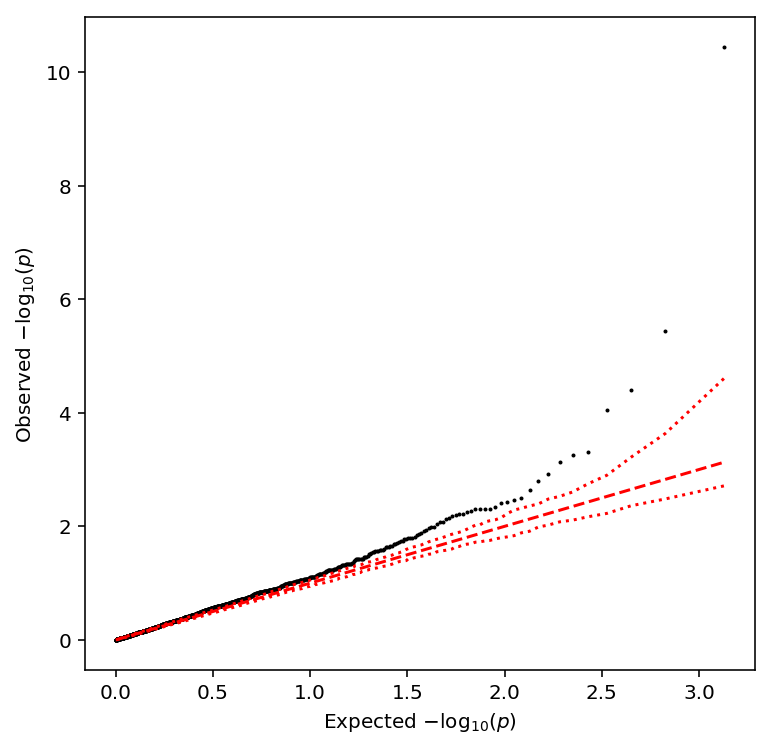
Repeat the analysis after subsetting to 54 individuals.
np.random.seed(0) subset = np.random.choice([x for x in geuvadis.columns], size=54, replace=False) pd.Series(subset).sort_values().to_csv('/scratch/midway2/aksarkar/singlecell/geuvadis-subset.txt', header=None, index=None)
write_pheno_file(geuvadis[subset], gene_info, '/scratch/midway2/aksarkar/singlecell/geuvadis/test.bed', prefix='')
Submitted batch job 44544326
Submitted batch job 44544018
Submitted batch job 44544375
geuvadis_54_qtls = read_qtltools_output('geuvadis/test') plot_approx_permutation(geuvadis_54_qtls)
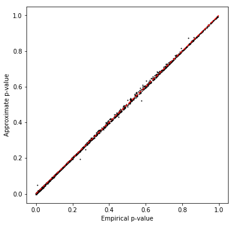
Reproduce bulk eQTL calls
The iPSC bulk eQTLs were called in Banovich et al 2018.
eQTLs in iPSCs and LCLs: We transformed expression levels to a standard normal within each individual. We next accounted for unknown confounders by removing principal components from the LCL (15 PCs) and iPSC (10 PCs) data. Genotypes were obtained using impute2 as described previously (Li et al. 2016). We only considered variants within 50 kb of genes. To identify association between genotype and gene expression, we used FastQTL (Ongen et al. 2016). After the initial regression, a variable number of permutations were performed to obtain a gene-wise adjusted P-value (Ongen et al. 2016). To identify significant eQTLs, we used Storey's q-value (Storey and Tibshirani 2003) on the adjusted P-values. Genes with a q-value less than 0.1 are considered significant.
Important notes:
The text doesn't state how expression level was quantified (it was the ratio of mapped reads to total reads after correction by
WASP).WASP(de Geijin et al 2015) fits quartic polynomials \(f, g\) which predict the total read count per region \(T^*_{ij}\) from the observed read count \(x_{ij}\) and GC content \(w_j\) by maximizing the likelihood of the observed read counts:\[ x_{ij} \sim \mathrm{Pois}(T^*_{ij}) \]
\[ T^*_{ij} = \exp\left(f\left(\sum_i x_{ij}\right)\right) g(w_j) \]
Using log CPM (under the assumption that we never compare genes to each other) yields 1279 eQTLs (89%).
fastqtlexpects gene start/end, and only takes cis-SNPs around the start ignoring strand. The code uses GENCODE v19 exons to define the start/end.qtltoolsexpects TSS and strand, but doesn't use strand information in cis-eQTL mapping. Using the start coordinate of the provided expression matrix as TSS yields 1265 eQTLs (87%).- The methods section of Degner et al 2012 states data is standardized across individuals, and quantile normalized within individuals. The equation contradicts the text, but the code follows the text.
- The code analyzes 100kb windows, contradicting the text.
- Not every gene in the input appears in the output, and changing the number of chunks changes the number of genes lost.
- QTL-gene pairs passed the Benjamini-Hochberg procedure, not Storey's procedure.
sbatch --partition=broadwl -a 1-25 #!/bin/bash source activate scqtl fastqtl -V YRI_SNPs_2_IPSC.txt.gen.gz -B fastqtl_qqnorm_RNAseq_run.fixed.txt.gz -C fasteqtl_PC_RNAseq_run.fixed.txt -O bulk-qtl.$SLURM_ARRAY_TASK_ID.txt --exclude-samples file_IPSC.excl --window 1e5 --permute 1000 10000 --chunk $SLURM_ARRAY_TASK_ID 25 --seed 1475098497
Submitted batch job 44546060
Subsample the individuals.
sbatch --partition=broadwl -a 1-25 #!/bin/bash source activate scqtl awk 'NR < 6' file_IPSC.used | cat - file_IPSC.excl >subsample.excl fastqtl -V YRI_SNPs_2_IPSC.txt.gen.gz -B fastqtl_qqnorm_RNAseq_run.fixed.txt.gz -C fasteqtl_PC_RNAseq_run.fixed.txt -O bulk-qtl.$SLURM_ARRAY_TASK_ID.txt --exclude-samples subsample.excl --window 1e5 --permute 1000 10000 --chunk $SLURM_ARRAY_TASK_ID 25 --seed 1475098497
Submitted batch job 47297158
Read fastqtl output.
bulk_qtls = read_fastqtl_output('reproduce-yang/bulk')
Write out the summary stats with headers.
bulk_qtls.to_csv('/project2/mstephens/aksarkar/projects/singlecell-qtl/data/scqtl-mapping/bulk.txt.gz', sep='\t', index=None, compression='gzip')
Compare qtltools to fastqtl. The input files need to be modified.
sbatch --partition=broadwl --wait #!/bin/bash zcat fastqtl_qqnorm_RNAseq_run.fixed.txt.gz | awk -vOFS='\t' 'NR == 1 {$4 = "pid" OFS "gid" OFS "strand"; for (i = 5; i <= NF; i++) {$i = "NA"$i} print} NR > 1 {$4 = $4 OFS $4 OFS "+"; $3 = $2; print}' >test.bed awk 'NR == 1 {for (i = 2; i <= NF; i++) {$i = "NA"$i}} {print}' fasteqtl_PC_RNAseq_run.fixed.txt >bulk-covars.txt
Submitted batch job 44979838
Check whether the FDR is properly controlled by permuting.
np.random.seed(0) permutation = bulk_expr.columns.values.copy() np.random.shuffle(permutation[5:]) bulk_expr.columns = permutation covars = (pd.read_table('/scratch/midway2/aksarkar/singlecell/reproduce-yang/covars.txt', sep=' ') .rename(columns={k: v for k, v in zip(bulk_expr.columns, permutation)})) covars.to_csv('/scratch/midway2/aksarkar/singlecell/reproduce-yang/covars.txt', sep=' ', index=False)
Fix the TSS by rewriting the phenotype file.
bulk_expr = pd.read_table('/scratch/midway2/aksarkar/singlecell/reproduce-yang/test.bed', index_col=3) bulk_expr.index = [x.split('.')[0] for x in bulk_expr.index] write_pheno_file(bulk_expr.iloc[:,5:], gene_info, '/scratch/midway2/aksarkar/singlecell/reproduce-yang/test.bed', holdout=False)
Index the phenotype file.
Submitted batch job 44683584
Run qtltools.
Submitted batch job 44683586
Run qtltools on reprocessed dosages.
Submitted batch job 47427752
Run qtltools on subsample.
awk '{print "NA" $0}' subsample.excl >subsample-qtltools.excl
Submitted batch job 47428279
Read qtltools output
bulk_qtls = read_qtltools_output('reproduce-yang/test')
Check the beta approximation.
plot_approx_permutation(bulk_qtls)
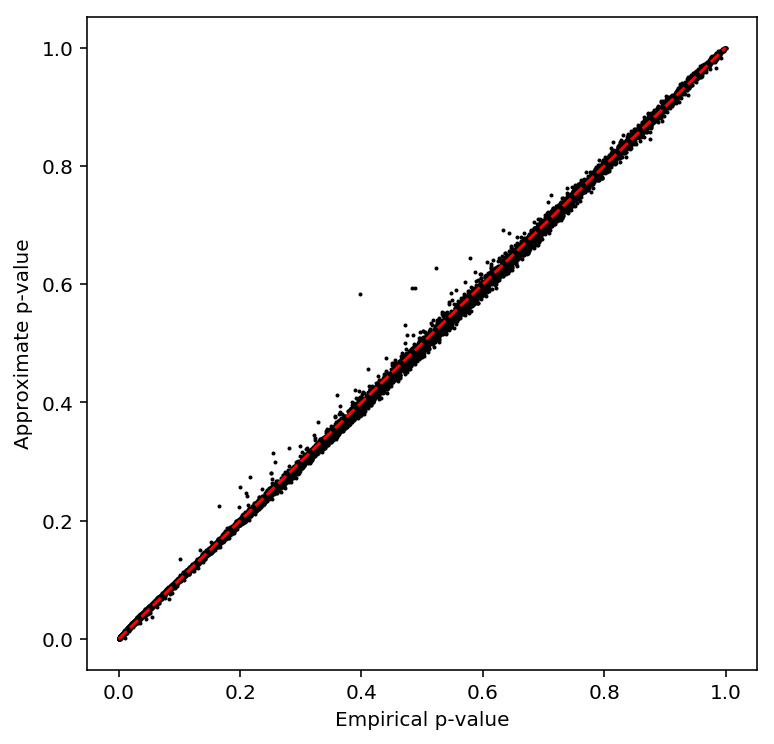
Plot a QQ plot of adjusted p-values.
qqplot(bulk_qtls)
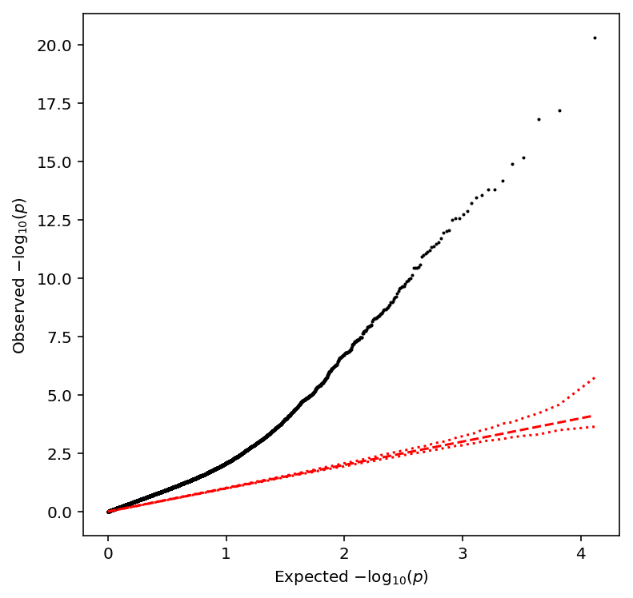
Take QTLs with \(\mathrm{FDR} < 0.1\).
bulk_qtls['fdr_pass'].sum()
1136
Recall bulk eQTLs from log CPM
Read the counts matrix.
bulk_counts = (pd.read_table('/project2/gilad/singlecell-qtl/bulk/counts_RNAseq_iPSC.txt', sep=' ', index_col=0) .rename(columns=lambda x: 'NA{}'.format(x)) .rename(index=lambda x: x.split('.')[0]))
Throw out individuals.
with open('/scratch/midway2/aksarkar/singlecell/reproduce-yang/file_IPSC.excl') as f: for line in f: k = 'NA{}'.format(line.strip()) if k in bulk_counts: del bulk_counts[k]
Normalize the counts matrix by computing log CPM. Normalizing by length is unnecessary because we only ever compare counts for the same gene across individuals.
bulk_log_cpm = (cpm(bulk_counts) .transform(lambda x: (x - x.mean()) / x.std(), axis=1) .apply(qqnorm, axis=0))
Compute expression PCs.
covars = pd.DataFrame(skd.PCA(n_components=10).fit(bulk_log_cpm).components_, columns=bulk_log_cpm.columns) covars.index.name = 'id' covars.to_csv('/scratch/midway2/aksarkar/singlecell/recall-bulk/log-cpm-covars.txt', sep='\t')
Check whether the false discovery rate is properly controlled by permuting the data.
Write the phenotype matrix in qtltools format. Use the annotation data
(ENSEMBL 75) in this repository to be consistent with the single cell
data. Important: this loses 1716 genes (are they pseudogenes?)
write_pheno_file( bulk_log_cpm, gene_info, holdout=False, output_file='/scratch/midway2/aksarkar/singlecell/recall-bulk/bulk-log-cpm.bed')
Index the phenotype file.
Submitted batch job 44681764
Ensure the dosage file follows the VCF standard. Add the prefix NA to sample IDs.
sbatch --partition=broadwl #!/bin/bash zcat YRI_SNPs_2_IPSC.txt.gen.gz | awk -vOFS='\t' 'BEGIN {print "##fileformat=VCFv4.2"; print "##FORMAT=<ID=DS,Number=1,Type=Float>"} NR == 1 {for (i = 10; i <= NF; i++) {$i = "NA"$i}} {print}' | bgzip >yri-dosages.vcf.gz tabix yri-dosages.vcf.gz
Submitted batch job 44546926
Run qtltools
Submitted batch job 44681768
Read the output. Important: this loses 201 genes (is this a bug in
qtltools)?
bulk_cpm_qtls = read_qtltools_output('recall-bulk/bulk-log-cpm')
Check the beta approximation.
plot_approx_permutation(bulk_cpm_qtls)
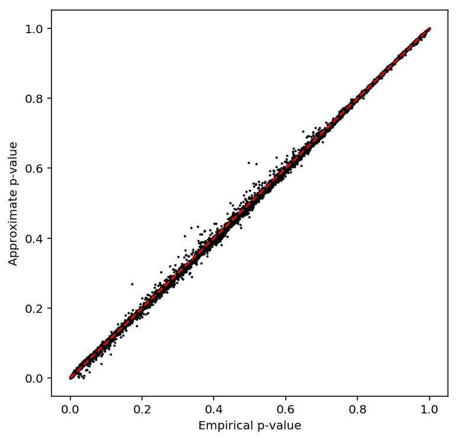
Plot a QQ plot of adjusted p-values.
qqplot(bulk_cpm_qtls)
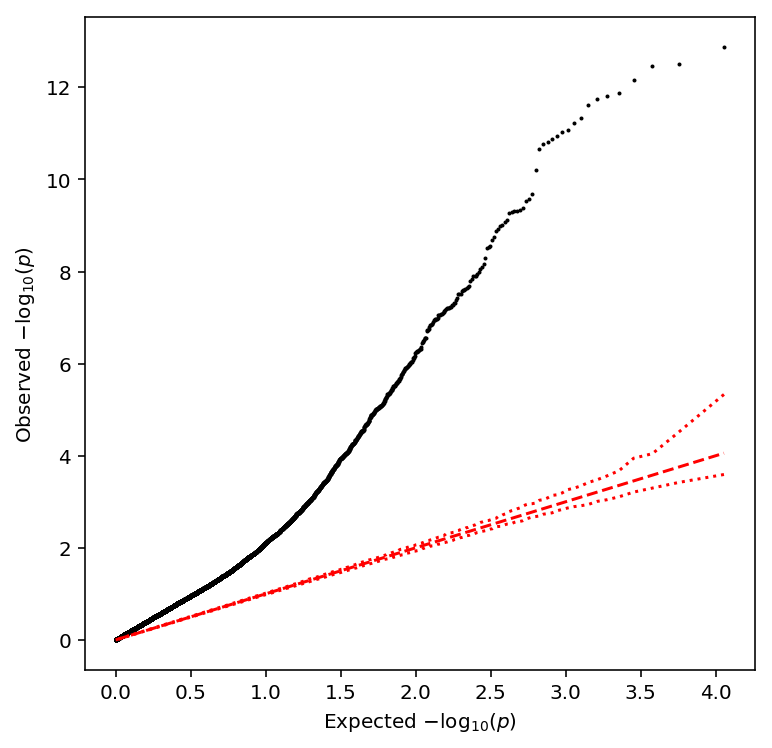
Take QTLs with \(\mathrm{FDR} < 0.1\).
bulk_cpm_qtls['fdr_pass'].sum()
1276
Recall bulk eQTLs from log TPM
We reprocessed the bulk RNA-Seq data using kallisto. Read the TPM
matrix.
bulk_log_tpm = pd.read_table('/project2/mstephens/aksarkar/projects/singlecell-qtl/data/kallisto/bulk-ipsc-tpm.txt.gz', header=None, sep=' ') bulk_log_tpm = np.log(bulk_log_tpm.pivot(columns=0, index=1, values=2) + 1) bulk_log_tpm.index = [x.split('.')[0] for x in bulk_log_tpm.index] # Important: need to throw out all zero rows because they blow up # standardization bulk_log_tpm = (bulk_log_tpm[bulk_log_tpm.apply(lambda x: x.sum() > 0, axis=1)] .transform(lambda x: (x - x.mean()) / x.std(), axis=1) .apply(qqnorm, axis=0))
To quantify how much power we expect to lose going from 58 to 53 individuals (in our scRNA-Seq data), perform QTL mapping on a random subset of 53 individuals.
np.random.seed(0) keep_inds = np.random.choice(bulk_log_tpm.columns, size=53, replace=False) bulk_log_tpm = bulk_log_tpm.filter(items=keep_inds, axis='columns')
Get the TSS information. Use the annotation data (ENSEMBL 75) in this repository to be consistent with the single cell data.
Write the phenotype matrix in qtltools format. Important: this loses 1034
genes
write_pheno_file( bulk_log_tpm, gene_info, holdout=False, output_file='/scratch/midway2/aksarkar/singlecell/recall-bulk/bulk-log-tpm.bed')
Index the phenotype file.
Submitted batch job 47427500
Compute principal components.
covars = pd.DataFrame(skd.PCA(n_components=6).fit(bulk_log_tpm).components_, columns=bulk_log_tpm.columns) covars.index.name = 'id' covars.to_csv('/scratch/midway2/aksarkar/singlecell/recall-bulk/log-tpm-covars.txt', sep='\t')
Run qtltools
Submitted batch job 47427616
Read the output. Important: this loses 201 genes (is this a bug in
qtltools)?
bulk_tpm_qtls = read_qtltools_output('recall-bulk/bulk-log-tpm')
Check the beta approximation to the permuted p-values.
plot_approx_permutation(bulk_tpm_qtls)
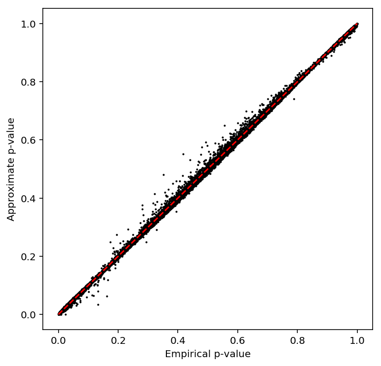
Plot a QQ plot of the adjusted p-values.
qqplot(bulk_tpm_qtls)
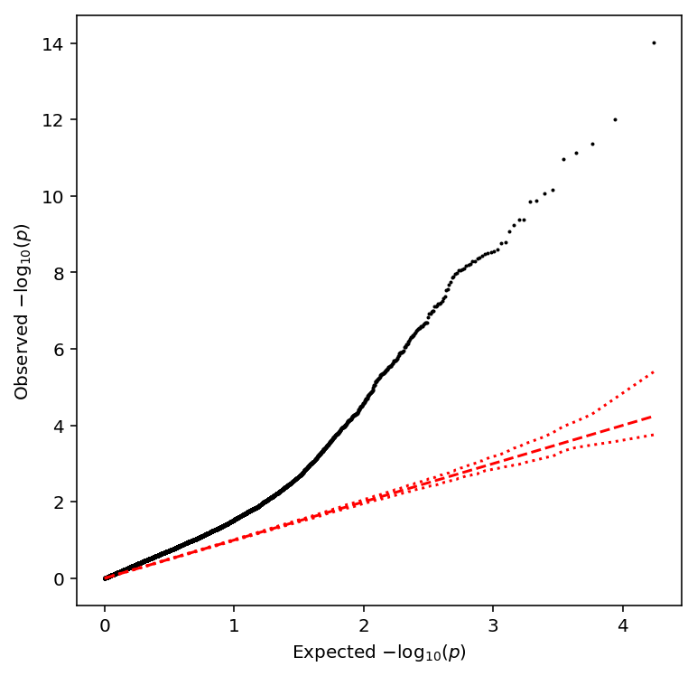
Take QTLs with \(\mathrm{FDR} < 0.1\).
bulk_tpm_qtls['fdr_pass'].sum()
683
Reprocess YRI dosages
We have two individuals which weren't used in Banovich et al 2018, so we don't have their genotypes. Reprocess the IMPUTE2 output to get the correct dosage matrix.
rsync -au -f '+ */' -f '+ *.impute2.gz' -f '+ YRI_samples.txt' -f '- *' /mnt/lustre/data/internal/genotypes/hg19/YRI/ aksarkar@midway2.rcc.uchicago.edu:/scratch/midway2/aksarkar/singlecell/scqtl-mapping/
import argparse import glob import gzip import numpy as np import pandas as pd import sqlite3 def convert_impute2_vcf(file, chrom, outfile, min_maf=0.05, mask=None): for line in file: record = line.split() posterior = np.array([float(x) for x in record[5:]]) dose = posterior.reshape(-1, 3).dot(np.arange(3)) if mask is not None: dose = dose[mask] if min_maf <= dose.mean() / 2 <= 1 - min_maf: print(chrom, record[2], '{}.{}.{}'.format(record[1], chrom, record[2]), record[3], record[4], '.', '.', '.', 'DS', *['{:.3f}'.format(x) for x in dose], sep='\t', file=outfile) parser = argparse.ArgumentParser() parser.add_argument('-s', '--subset', help='Sample inclusion list', type=pd.read_table, default=None) parser.add_argument('-o', '--output', help='Output file', default='dosages.vcf') args = parser.parse_args() samples = pd.read_table('YRI_samples.txt', header=None, sep=' ') if args.subset is not None: mask = samples[0].isin(args.subset).values samples = samples.loc[mask.values.ravel(), 0] else: mask = None samples = samples.loc[:,0] with open(args.output, 'w') as f: print('##fileformat=VCFv4.2', file=f) print('##FORMAT=<ID=DS,Number=1,Type=Float>', file=f) print('#CHROM', 'POS', 'ID', 'REF', 'ALT', 'QUAL', 'FILTER', 'INFO', 'FORMAT', *samples, sep='\t', file=f) for c in range(1, 23): with gzip.open('chr{}.hg19.impute2.gz'.format(c), 'rt') as g: convert_impute2_vcf(g, 'chr{}'.format(c), outfile=f, mask=mask)
sbatch --partition=broadwl -n1 -c28 --exclusive --mem=8G #!/bin/bash source activate scqtl python /project2/mstephens/aksarkar/projects/singlecell-qtl/code/reprocess-dosage.py -o yri-120-dosages.vcf bgzip --threads=28 yri-120-dosages.vcf tabix yri-120-dosages.vcf.gz
Submitted batch job 47228636
Analysis using counts
One obvious way to estimate means/variances to use as quantitative phenotypes is to use the sample means/variances of the counts.
Call eQTLs from pooled scRNA-Seq
Read the QC filters.
annotation = pd.read_table('/project2/mstephens/aksarkar/projects/singlecell-qtl/data/scqtl-annotation.txt') keep_samples = pd.read_table('/project2/mstephens/aksarkar/projects/singlecell-qtl/data/quality-single-cells.txt', index_col=0, header=None) keep_genes = pd.read_table('/project2/mstephens/aksarkar/projects/singlecell-qtl/data/genes-pass-filter.txt', index_col=0, header=None) annotation = annotation.loc[keep_samples.values.ravel()] keep_inds = annotation.groupby('chip_id').apply(lambda x: len(x) >= 50)
Read and pool the UMI data.
pooled_counts = pd.concat( [(chunk .filter(items=keep_genes[keep_genes.values].index, axis='index') # Important: this can't be done by filter because sample names are # different in the QC file .loc[:,keep_samples.values.ravel()] .groupby(annotation['chip_id'].values, axis=1) .agg(np.sum)) for chunk in pd.read_table('/project2/mstephens/aksarkar/projects/singlecell-qtl/data/scqtl-counts.txt.gz', chunksize=1000, index_col=0)])
Normalize the pooled counts.
pooled_counts = (pooled_counts.loc[:,keep_inds] .transform(lambda x: (x - x.mean()) / x.std(), axis=1) .apply(qqnorm, axis=0))
Compute principal components and write out the covariate file.
covars = pd.DataFrame(skd.PCA(n_components=10).fit(pooled_counts).components_, columns=pooled_counts.columns) covars.index.name = 'id' covars.to_csv('/scratch/midway2/aksarkar/singlecell/scqtl-mapping/counts/pooled-covars.txt', sep='\t')
Write out the phenotype file.
write_pheno_file(pooled_counts, gene_info, holdout=False, output_file='/scratch/midway2/aksarkar/singlecell/scqtl-mapping/counts/pooled.bed')
Index the phenotype file.
Submitted batch job 55769711
Run qtltools
Read the output. Important: this loses 200 genes (is this a bug in
qtltools)?
pooled_qtls = read_qtltools_output('scqtl-mapping/counts/pooled')
Check the beta approximation.
plot_approx_permutation(pooled_qtls)
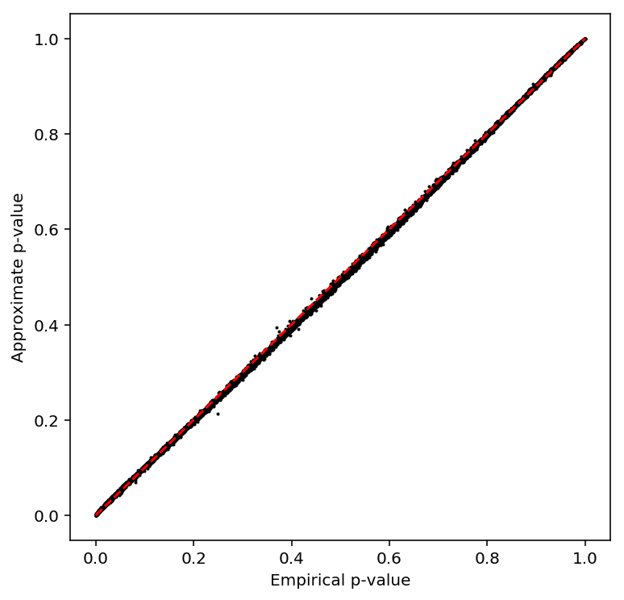
Plot a QQ plot of the adjusted p-values.
qqplot(pooled_qtls)
Take QTLs with \(\mathrm{FDR} < 0.1\).
pooled_qtls['fdr_pass'].sum()
231
Call mean-QTLs
Read the count matrix.
umi = pd.concat( [(chunk .filter(items=keep_genes[keep_genes.values].index, axis='index') # Important: this can't be done by filter because sample names are # different in the QC file .loc[:,keep_samples.values.ravel()]) for chunk in pd.read_table('/project2/mstephens/aksarkar/projects/singlecell-qtl/data/scqtl-counts.txt.gz', chunksize=1000, index_col=0)])
Compute the sample mean per individual, then normalize.
sample_mean = (umi .groupby(annotation['chip_id'].values, axis=1) .agg(np.mean) .transform(lambda x: (x - x.mean()) / x.std(), axis=1) .apply(qqnorm, axis=0))
Compute principal components and write out the covariate file.
covars = pd.DataFrame(skd.PCA(n_components=10).fit(sample_mean).components_, columns=sample_mean.columns) covars.index.name = 'id' covars.to_csv('/scratch/midway2/aksarkar/singlecell/scqtl-mapping/counts/sample-mean-covars.txt', sep='\t')
Write out the phenotype file for qtltools. Hold out even chromosomes while
optimizing the power to detect eQTLs.
write_pheno_file( sample_mean, gene_info, output_file='/scratch/midway2/aksarkar/singlecell/scqtl-mapping/counts/sample-mean.bed', holdout=False)
Index the phenotype file.
Submitted batch job 55770738
Run qtltools.
Submitted batch job 55770741
Read the output.
sample_mean_qtls = read_qtltools_output('scqtl-mapping/counts/sample-mean')
Check the beta approximation to the permutation p-values.
plot_approx_permutation(sample_mean_qtls)
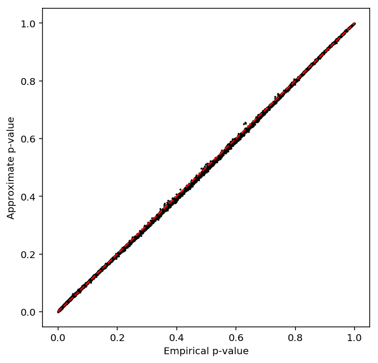
Plot a QQ plot of the adjusted p-values.
qqplot(sample_mean_qtls)
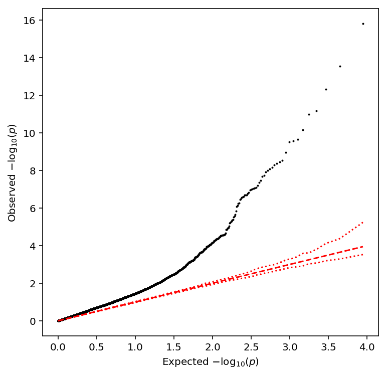
Take QTLs at FDR 10%.
sample_mean_qtls['fdr_pass'].sum()
268
Call variance-QTLs
Read the UMI matrix.
Compute the sample variance per individual, then normalize.
sample_var = (umi .groupby(annotation['chip_id'].values, axis=1) .agg(np.var) .transform(lambda x: (x - x.mean()) / x.std(), axis=1) .apply(qqnorm, axis=0))
Compute principal components and write out the covariate file.
covars = pd.DataFrame(skd.PCA(n_components=2).fit(sample_var).components_, columns=sample_var.columns) covars.index.name = 'id' covars.to_csv('/scratch/midway2/aksarkar/singlecell/scqtl-mapping/counts/sample-var-covars.txt', sep='\t')
Write out the phenotype file for qtltools. Hold out even chromosomes while
optimizing the power to detect eQTLs.
write_pheno_file(sample_var, gene_info, '/scratch/midway2/aksarkar/singlecell/scqtl-mapping/counts/sample-var.bed', holdout=False)
Index the phenotype file.
Submitted batch job 55770997
Run qtltools.
Submitted batch job 55771003
Read the output.
sample_var_qtls = read_qtltools_output('scqtl-mapping/counts/sample-var')
Check the beta approximation to the permutation p-values.
plot_approx_permutation(sample_var_qtls)
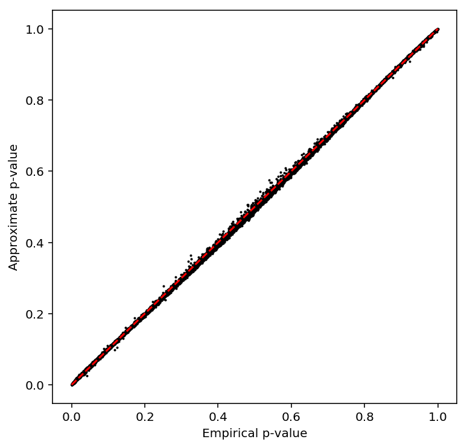
Plot a QQ plot of the adjusted p-values.
qqplot(sample_var_qtls)
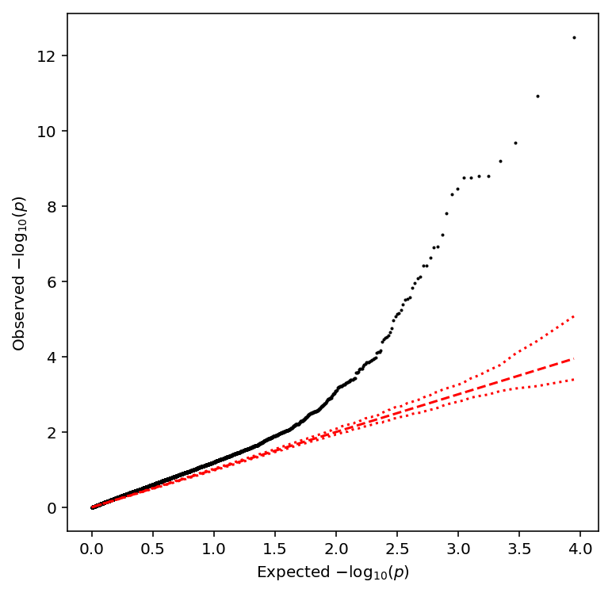
Take QTLs at FDR 10%.
sample_var_qtls['fdr_pass'].sum()
94
Call CV-QTLs
Compute the sample CV per individual per gene, then normalize.
sample_cv = (umi .groupby(annotation['chip_id'].values, axis=1) .agg(lambda x: np.std(x, axis=1) / (np.mean(x, axis=1) + 1e-8)) .transform(lambda x: (x - x.mean()) / x.std(), axis=1) .apply(qqnorm, axis=0))
Write out the phenotype file for qtltools. Hold out even chromosomes while
optimizing the power to detect eQTLs.
write_pheno_file(sample_cv, gene_info, '/scratch/midway2/aksarkar/singlecell/scqtl-mapping/counts/sample-cv.bed', holdout=False)
Index the phenotype file.
Submitted batch job 55771641
Run qtltools.
Submitted batch job 55771671
Read the output.
sample_cv_qtls = read_qtltools_output('scqtl-mapping/counts/sample-cv')
Check the beta approximation to the permutation p-values.
plot_approx_permutation(sample_cv_qtls)
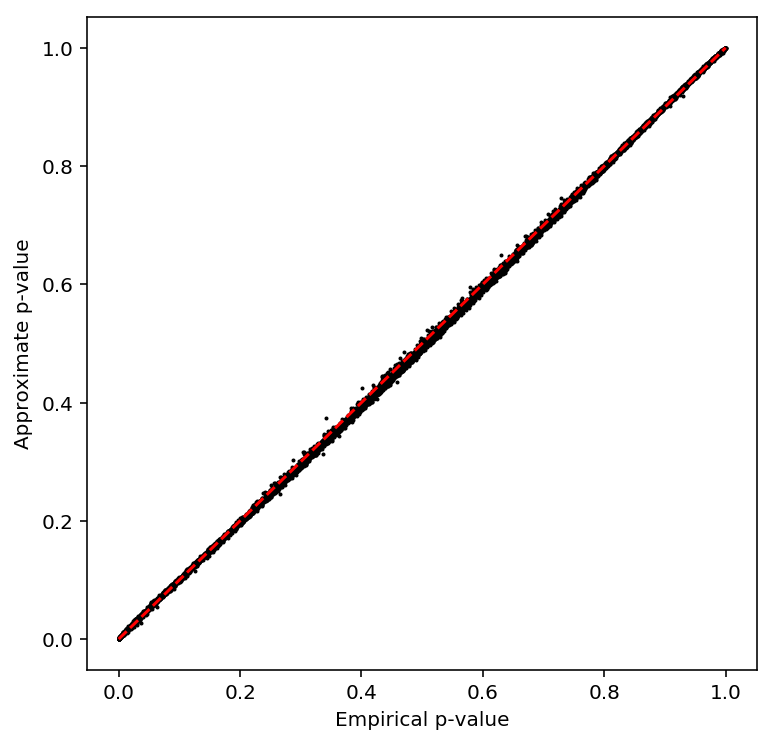
Plot a QQ plot of the adjusted p-values.
qqplot(sample_cv_qtls)
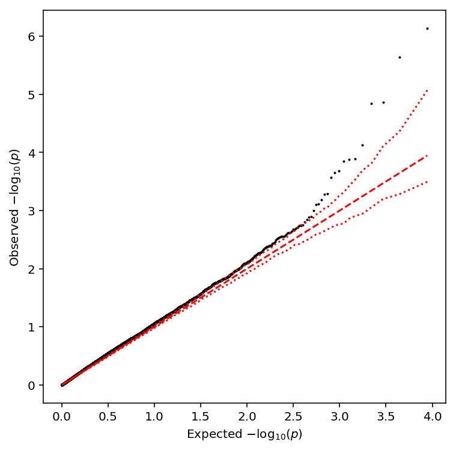
Take QTLs at FDR 10%.
sample_cv_qtls['fdr_pass'].sum()
4
Call Fano-QTLs
Read the UMI matrix.
Compute the sample Fano factor per individual per gene, then normalize.
sample_fano = (umi .groupby(annotation['chip_id'].values, axis=1) .agg(lambda x: np.var(x, axis=1) / (1e-8 + np.mean(x, axis=1))) .transform(lambda x: (x - x.mean()) / x.std(), axis=1) .apply(qqnorm, axis=0))
Write out the phenotype file for qtltools. Hold out even chromosomes while
optimizing the power to detect eQTLs.
write_pheno_file(sample_fano, gene_info, '/scratch/midway2/aksarkar/singlecell/scqtl-mapping/counts/sample_fano.bed', holdout=False)
Index the phenotype file.
Submitted batch job 55771840
Compute principal components and write out the covariate file.
covars = pd.DataFrame(skd.PCA(n_components=2).fit(sample_fano).components_, columns=sample_fano.columns) covars.index.name = 'id' covars.to_csv('/scratch/midway2/aksarkar/singlecell/scqtl-mapping/counts/sample-fano-covars.txt', sep='\t')
Run qtltools.
Submitted batch job 55771844
Read the output.
sample_fano_qtls = read_qtltools_output('scqtl-mapping/counts/sample_fano')
Check the beta approximation to the permutation p-values.
plot_approx_permutation(sample_fano_qtls)
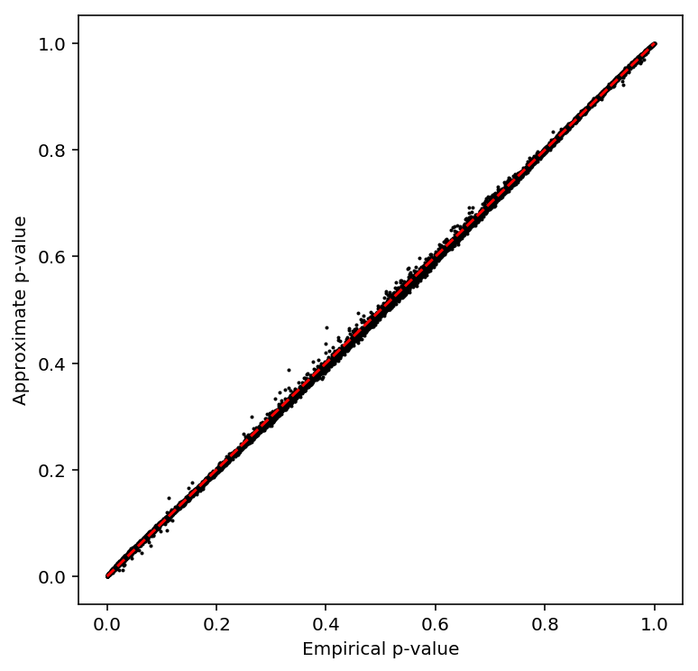
Plot a QQ plot of the adjusted p-values.
qqplot(sample_fano_qtls)
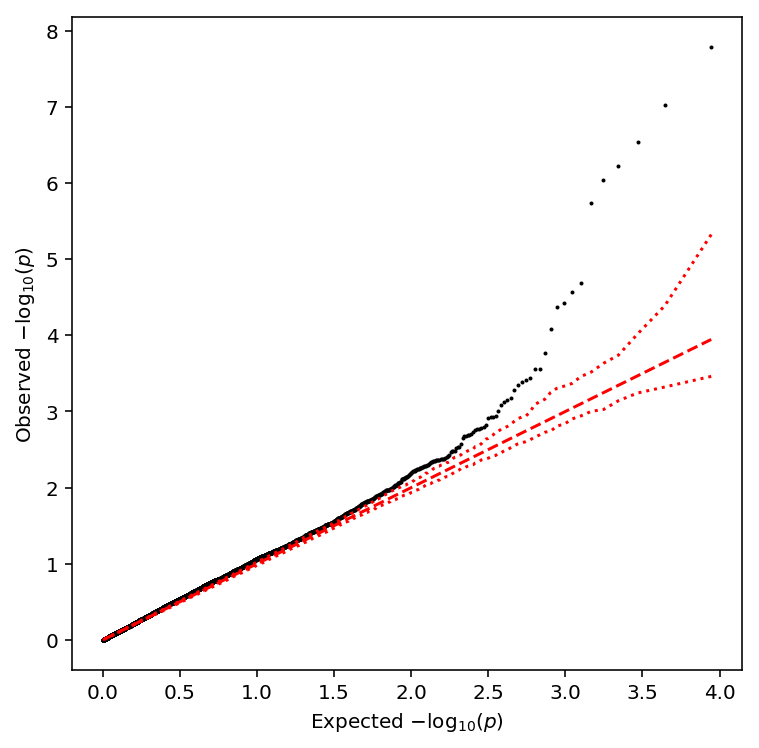
Take QTLs at FDR 10%.
sample_fano_qtls['fdr_pass'].sum()
11
Analysis using log CPM
The most obvious way to estimate means/variances to use as quantitative phenotypes is to use the sample moments of per cell log CPM.
Care has to be taken in handling zero-observations. Simply ignoring them leads to loss of power due to the pseudocount introduced in computing log CPM. To see this, fix one individual, one gene, and let \(r\) denote the observed count. Then,
\[ \log\mathrm{CPM} \propto \ln(r + \epsilon) - \ln\mathrm{const} \]
Let \(\mu = \mathbb{E}[r\,]\), \(\sigma^2 = \mathbb{V}[r\,]\), expand to second-order, then take expectations over cells:
\[ \mathbb{E}[\,\ln (r + \epsilon)\,] \approx \ln(\mu + \epsilon) - \frac{\sigma^2}{(\mu + \epsilon)^2} \]
\[ \mathbb{V}[\,\ln (r + \epsilon)\,] \approx \frac{2 \sigma^2}{(\mu + \epsilon)^2} - \frac{\sigma^4}{(\mu + \epsilon)^4} \]
Call eQTLs from pooled scRNA-Seq
Read the QC filters.
annotation = pd.read_table('/project2/mstephens/aksarkar/projects/singlecell-qtl/data/scqtl-annotation.txt') keep_samples = pd.read_table('/project2/mstephens/aksarkar/projects/singlecell-qtl/data/quality-single-cells.txt', index_col=0, header=None) keep_genes = pd.read_table('/project2/mstephens/aksarkar/projects/singlecell-qtl/data/genes-pass-filter.txt', index_col=0, header=None) annotation = annotation.loc[keep_samples.values.ravel()] keep_inds = annotation.groupby('chip_id').apply(lambda x: len(x) >= 50)
Read and pool the UMI data.
pooled_counts = pd.concat( [(chunk .filter(items=keep_genes[keep_genes.values].index, axis='index') # Important: this can't be done by filter because sample names are # different in the QC file .loc[:,keep_samples.values.ravel()] .groupby(annotation['chip_id'].values, axis=1) .agg(np.sum)) for chunk in pd.read_table('/project2/mstephens/aksarkar/projects/singlecell-qtl/data/scqtl-counts.txt.gz', chunksize=1000, index_col=0)])
Normalize the pooled counts.
pooled_cpm = (cpm(pooled_counts).loc[:,keep_inds] .transform(lambda x: (x - x.mean()) / x.std(), axis=1) .apply(qqnorm, axis=0))
Compute principal components and write out the covariate file.
covars = pd.DataFrame(skd.PCA(n_components=10).fit(pooled_cpm).components_, columns=pooled_cpm.columns) covars.index.name = 'id' covars.to_csv('/scratch/midway2/aksarkar/singlecell/scqtl-mapping/counts/pooled-covars.txt', sep='\t')
Write out the phenotype file.
write_pheno_file(pooled_cpm, gene_info, holdout=False, output_file='/scratch/midway2/aksarkar/singlecell/scqtl-mapping/counts/pooled.bed')
Index the phenotype file.
Submitted batch job 55767633
Run qtltools
Read the output. Important: this loses 200 genes (is this a bug in
qtltools)?
pooled_qtls = read_qtltools_output('scqtl-mapping/counts/pooled')
Check the beta approximation.
plot_approx_permutation(pooled_qtls)
Plot a QQ plot of the adjusted p-values.
qqplot(pooled_qtls)
Take QTLs with \(\mathrm{FDR} < 0.1\).
pooled_qtls['fdr_pass'].sum()
261
Call mean-QTLs
Throw out individuals with fewer than 50 cells.
Read the count matrix.
umi = pd.concat( [(chunk .filter(items=keep_genes[keep_genes.values].index, axis='index') # Important: this can't be done by filter because sample names are # different in the QC file .loc[:,keep_samples.values.ravel()]) for chunk in pd.read_table('/project2/mstephens/aksarkar/projects/singlecell-qtl/data/scqtl-counts.txt.gz', chunksize=1000, index_col=0)])
We previously noted that 50 cells was sufficient to reliably estimate the mean of single cell data. Therefore, throw out zeros from the analysis and require that at least 50 samples have non-zero count.
num_non_zero = umi.groupby(annotation['chip_id'].values, axis=1).agg(lambda x: (x > 0).values.sum(axis=1))
Derive a cutoff for the number of individuals with at least 50 non-zero observations per gene.
num_individuals_pass = (num_non_zero > 50).agg(np.sum, axis=1)
plt.clf() n, b, _ = plt.hist(num_individuals_pass, color='k', bins=np.arange(0, 53, 2), histtype='step', cumulative=True, normed=True) plt.axhline(y=n[-2], c='r', ls=':', lw=1) plt.xlabel('Number of individuals with at least 50 non-zero observations') _ = plt.ylabel('Cumulative fraction of genes')

Compute the sample mean log CPM per individual, then normalize.
sample_mean = (cpm(umi) .mask(umi == 0) .groupby(annotation['chip_id'].values, axis=1) .agg(np.mean) .loc[num_individuals_pass >= 50,keep_inds] .transform(lambda x: (x - x.mean()) / x.std(), axis=1) .apply(qqnorm, axis=0))
Compute principal components and write out the covariate file.
covars = pd.DataFrame(skd.PCA(n_components=10).fit(sample_mean).components_, columns=sample_mean.columns) covars.index.name = 'id' covars.to_csv('/scratch/midway2/aksarkar/singlecell/scqtl-mapping/counts/sample-mean-covars.txt', sep='\t')
Write out the phenotype file for qtltools. Hold out even chromosomes while
optimizing the power to detect eQTLs.
write_pheno_file( sample_mean, gene_info, output_file='/scratch/midway2/aksarkar/singlecell/scqtl-mapping/counts/sample-mean.bed', holdout=False)
Index the phenotype file.
Submitted batch job 55768305
Run qtltools.
Submitted batch job 46254485
Read the output.
sample_mean_qtls = read_qtltools_output('scqtl-mapping/counts/sample-mean')
Check the beta approximation to the permutation p-values.
plot_approx_permutation(sample_mean_qtls)
Plot a QQ plot of the adjusted p-values.
qqplot(sample_mean_qtls)
Take QTLs at FDR 10%.
sample_mean_qtls['fdr_pass'].sum()
207
Call variance-QTLs
Throw out individuals with fewer than 50 cells.
Read the UMI matrix.
Compute the sample variance of log CPM per individual, then normalize.
sample_var = (cpm(umi) .mask(umi == 0) .groupby(annotation['chip_id'].values, axis=1) .agg(np.var) .loc[num_individuals_pass >= 50,keep_inds] .transform(lambda x: (x - x.mean()) / x.std(), axis=1) .apply(qqnorm, axis=0))
Compute principal components and write out the covariate file.
covars = pd.DataFrame(skd.PCA(n_components=2).fit(sample_var).components_, columns=sample_var.columns) covars.index.name = 'id' covars.to_csv('/scratch/midway2/aksarkar/singlecell/scqtl-mapping/counts/sample-var-covars.txt', sep='\t')
Write out the phenotype file for qtltools. Hold out even chromosomes while
optimizing the power to detect eQTLs.
write_pheno_file(sample_var, gene_info, '/scratch/midway2/aksarkar/singlecell/scqtl-mapping/counts/sample-var.bed', holdout=False)
Index the phenotype file.
Submitted batch job 55769014
Run qtltools.
Submitted batch job 55769016
Read the output.
sample_var_qtls = read_qtltools_output('scqtl-mapping/counts/sample-var')
Check the beta approximation to the permutation p-values.
plot_approx_permutation(sample_var_qtls)
Plot a QQ plot of the adjusted p-values.
qqplot(sample_var_qtls)
Take QTLs at FDR 10%.
sample_var_qtls['fdr_pass'].sum()
0
Call CV-QTLs
Throw out individuals with fewer than 50 cells.
Read the UMI matrix.
Compute the sample CV of log CPM per individual, then normalize.
sample_cv = (cpm(umi) .mask(umi == 0) .groupby(annotation['chip_id'].values, axis=1) .agg(lambda x: np.std(x, axis=1) / (np.mean(x, axis=1) + 1e-8)) .loc[num_individuals_pass >= 50,keep_inds] .transform(lambda x: (x - x.mean()) / x.std(), axis=1) .apply(qqnorm, axis=0))
Write out the phenotype file for qtltools. Hold out even chromosomes while
optimizing the power to detect eQTLs.
write_pheno_file(sample_cv, gene_info, '/scratch/midway2/aksarkar/singlecell/scqtl-mapping/counts/sample-cv.bed', holdout=False)
Index the phenotype file.
Submitted batch job 55769280
Run qtltools.
Submitted batch job 55769282
Read the output.
sample_cv_qtls = read_qtltools_output('scqtl-mapping/counts/sample-cv')
Check the beta approximation to the permutation p-values.
plot_approx_permutation(sample_cv_qtls)
Plot a QQ plot of the adjusted p-values.
qqplot(sample_cv_qtls)
Take QTLs at FDR 10%.
sample_cv_qtls['fdr_pass'].sum()
3
Call Fano-QTLs
Throw out individuals with fewer than 50 cells.
Read the UMI matrix.
Fisher's index of dispersion is defined as \(V[x] / E[x]\). The Fano factor is Fisher's index of dispersion over a fixed window (in our case, the total number of reads).
Compute the sample Fano factor of log CPM per individual, then normalize.
sample_fano = (cpm(umi) .mask(umi == 0) .groupby(annotation['chip_id'].values, axis=1) .agg(lambda x: np.var(x, axis=1) / (np.mean(x, axis=1))) .loc[num_individuals_pass >= 50,keep_inds] .transform(lambda x: (x - x.mean()) / x.std(), axis=1) .apply(qqnorm, axis=0))
Write out the phenotype file for qtltools. Hold out even chromosomes while
optimizing the power to detect eQTLs.
write_pheno_file(sample_fano, gene_info, '/scratch/midway2/aksarkar/singlecell/scqtl-mapping/counts/sample_fano.bed', holdout=False)
Index the phenotype file.
Submitted batch job 55769523
Compute principal components and write out the covariate file.
covars = pd.DataFrame(skd.PCA(n_components=2).fit(sample_fano).components_, columns=sample_fano.columns) covars.index.name = 'id' covars.to_csv('/scratch/midway2/aksarkar/singlecell/scqtl-mapping/counts/sample-fano-covars.txt', sep='\t')
Run qtltools.
Submitted batch job 55769526
Read the output.
sample_fano_qtls = read_qtltools_output('scqtl-mapping/counts/sample_fano')
Check the beta approximation to the permutation p-values.
plot_approx_permutation(sample_fano_qtls)
Plot a QQ plot of the adjusted p-values.
qqplot(sample_fano_qtls)
Take QTLs at FDR 10%.
sample_fano_qtls['fdr_pass'].sum()
0
Analysis using ZINB
Call eQTLs
Estimate the moments of latent gene expression. We have:
\[ \mathbb{E}[\lambda_{ijk}] = (1 - \pi_{ik}) \mu_{ik} \]
\[ \mathbb{V}[\lambda_{ijk}] = (1 - \pi_{ik}) \phi_{ik}^{-1} + \pi_{ik} (1 - \pi_{ik}) \mu_{ik}^2 \]
log_mu = pd.read_table('/project2/mstephens/aksarkar/projects/singlecell-qtl/data/density-estimation/design1/zi2-log-mu.txt.gz', index_col=0, sep=' ') log_phi = pd.read_table('/project2/mstephens/aksarkar/projects/singlecell-qtl/data/density-estimation/design1/zi2-log-phi.txt.gz', index_col=0, sep=' ') logodds = pd.read_table('/project2/mstephens/aksarkar/projects/singlecell-qtl/data/density-estimation/design1/zi2-logodds.txt.gz', index_col=0, sep=' ') for x in (log_mu, log_phi, logodds): del x['NA18498'] # Important: log(sigmoid(x)) = -softplus(-x) mean_by_ind = np.exp(log_mu - np.log1p(np.exp(logodds))) variance_by_ind = np.exp(2 * log_mu + log_phi - np.log1p(np.exp(logodds))) + np.exp(-np.log1p(np.exp(logodds)) - np.log1p(np.exp(-logodds)) + 2 * log_mu)
Normalize the mean matrix analagous to the bulk data.
mean = (mean_by_ind .transform(lambda x: (x - x.mean()) / x.std(), axis=1) .apply(qqnorm, axis=0))
Compute principal components of the mean matrix.
covars = pd.DataFrame(skd.PCA(n_components=10).fit(mean).components_, columns=mean.columns) covars.index.name = 'id' covars.to_csv('/scratch/midway2/aksarkar/singlecell/scqtl-mapping/zinb/mean-covars.txt', sep='\t')
Write out the phenotype file for qtltools. Hold out even chromosomes while
optimizing the power to detect eQTLs.
write_pheno_file(mean, gene_info, '/scratch/midway2/aksarkar/singlecell/scqtl-mapping/zinb/mean.bed', holdout=False)
Index the phenotype file.
Submitted batch job 55772051
Run qtltools.
Submitted batch job 55772076
Read the output.
mean_qtls = read_qtltools_output('scqtl-mapping/zinb/mean')
Check the beta approximation to the permutation p-values.
plot_approx_permutation(mean_qtls)
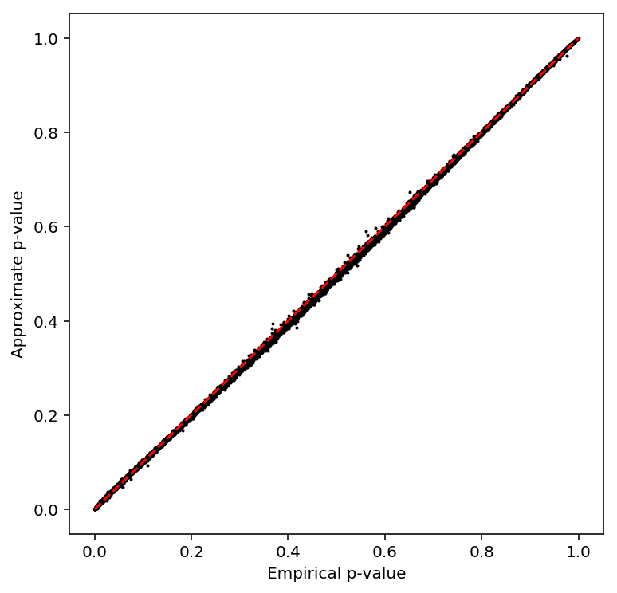
Plot a QQ plot of the adjusted p-values.
qqplot(mean_qtls)
Take QTLs at FDR 10%.
mean_qtls['fdr_pass'].sum()
235
Fit multiplicative model
Estimate the moments of latent gene expression. We have:
\[ \mathbb{E}[\lambda_{ijk}] = (1 - \pi_{ik}) \mu_{ik} \]
\[ \mathbb{V}[\lambda_{ijk}] = (1 - \pi_{ik}) \phi_{ik}^{-1} + \pi_{ik} (1 - \pi_{ik}) \mu_{ik}^2 \]
log_mu = pd.read_table('/project2/mstephens/aksarkar/projects/singlecell-qtl/data/density-estimation/design1/zi2-log-mu.txt.gz', index_col=0, sep=' ') log_phi = pd.read_table('/project2/mstephens/aksarkar/projects/singlecell-qtl/data/density-estimation/design1/zi2-log-phi.txt.gz', index_col=0, sep=' ') logodds = pd.read_table('/project2/mstephens/aksarkar/projects/singlecell-qtl/data/density-estimation/design1/zi2-logodds.txt.gz', index_col=0, sep=' ') for x in (log_mu, log_phi, logodds): del x['NA18498'] # Important: log(sigmoid(x)) = -softplus(-x) mean_by_ind = np.exp(log_mu - np.log1p(np.exp(logodds))) variance_by_ind = np.exp(2 * log_mu + log_phi - np.log1p(np.exp(logodds))) + np.exp(-np.log1p(np.exp(logodds)) - np.log1p(np.exp(-logodds)) + 2 * log_mu)
Normalize the mean matrix analagous to the bulk data.
multmean = (np.log(mean_by_ind) .transform(lambda x: (x - x.mean()) / x.std(), axis=1) .apply(qqnorm, axis=0))
Compute principal components of the mean matrix.
covars = pd.DataFrame(skd.PCA(n_components=10).fit(multmean).components_, columns=multmean.columns) covars.index.name = 'id' covars.to_csv('/scratch/midway2/aksarkar/singlecell/scqtl-mapping/zinb/multmean-covars.txt', sep='\t')
Write out the phenotype file for qtltools. Hold out even chromosomes while
optimizing the power to detect eQTLs.
write_pheno_file(multmean, gene_info, '/scratch/midway2/aksarkar/singlecell/scqtl-mapping/zinb/multmean.bed', holdout=False)
Index the phenotype file.
Submitted batch job 55772263
Run qtltools.
Submitted batch job 55772298
Read the output.
multmean_qtls = read_qtltools_output('scqtl-mapping/zinb/mean')
Check the beta approximation to the permutation p-values.
plot_approx_permutation(multmean_qtls)

Plot a QQ plot of the adjusted p-values.
qqplot(multmean_qtls)
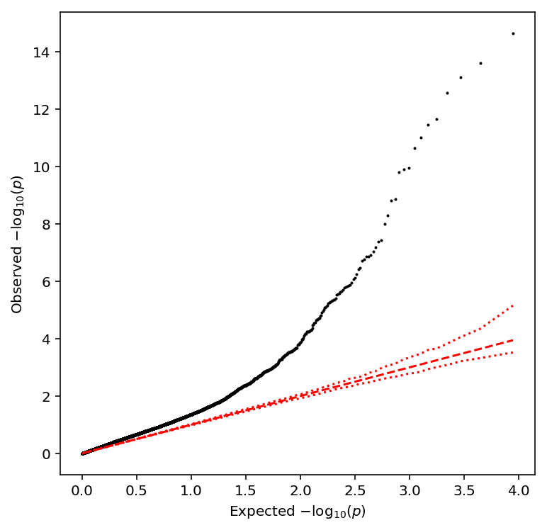
Take QTLs at FDR 10%.
multmean_qtls['fdr_pass'].sum()
235
Call φ-QTLs
Normalize the phenotype matrix.
log_phi = log_phi.transform(lambda x: (x - x.mean()) / x.std(), axis=1).apply(qqnorm, axis=1)
Write out the phenotype file.
write_pheno_file(log_phi, gene_info, holdout=False, output_file='/scratch/midway2/aksarkar/singlecell/scqtl-mapping/zinb/log_phi.bed')
Index the phenotype file.
Submitted batch job 55772635
Run qtltools.
Submitted batch job 55772639
Read the output.
log_phi_qtls = read_qtltools_output('scqtl-mapping/zinb/log_phi')
Check the beta approximation to the permutation p-values.
plot_approx_permutation(log_phi_qtls)
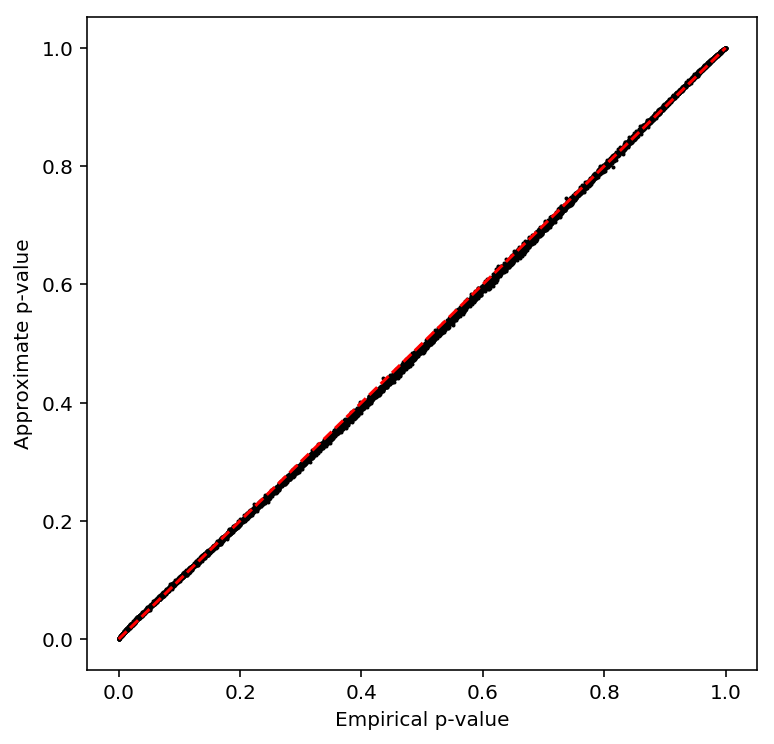
Plot a QQ plot of the adjusted p-values.
qqplot(log_phi_qtls)
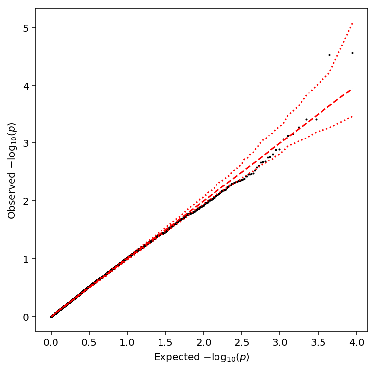
Take QTLs at FDR 10%.
log_phi_qtls['fdr_pass'].sum()
0
Call variance-QTLs
Normalize the variance matrix.
variance = (variance_by_ind .transform(lambda x: (x - x.mean()) / x.std(), axis=1) .apply(qqnorm, axis=0))
Compute principal components of the variance matrix.
covars = pd.DataFrame(skd.PCA(n_components=2).fit(variance).components_, columns=variance.columns) covars.index.name = 'id' covars.to_csv('/scratch/midway2/aksarkar/singlecell/scqtl-mapping/zinb/variance-covars.txt', sep='\t')
Write out the phenotype file for qtltools.
write_pheno_file(variance, gene_info, '/scratch/midway2/aksarkar/singlecell/scqtl-mapping/zinb/variance.bed', holdout=False)
Index the phenotype file.
Submitted batch job 55772747
Run qtltools.
Submitted batch job 55772752
Read the output.
variance_qtls = read_qtltools_output('scqtl-mapping/zinb/variance')
Check the beta approximation to the permutation p-values.
plot_approx_permutation(variance_qtls)
Plot a QQ plot of the adjusted p-values.
qqplot(variance_qtls)
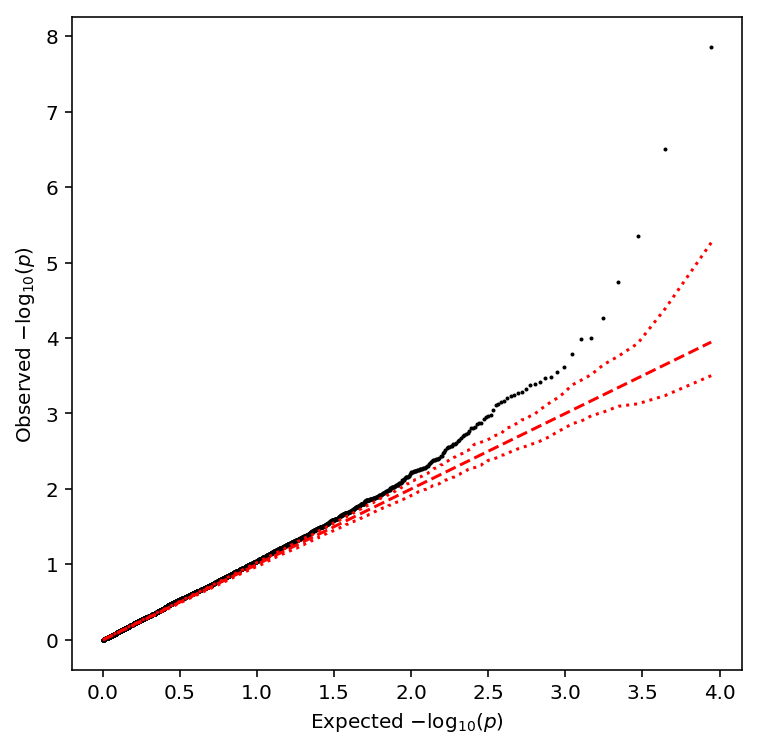
Take QTLs at FDR 10%.
variance_qtls['fdr_pass'].sum()
5
Call CV-QTLs
Estimate the coefficient of variation.
cv = np.sqrt(variance_by_ind) / mean_by_ind
Normalize the CV matrix.
cv = cv.transform(lambda x: (x - x.mean()) / x.std(), axis=1).apply(qqnorm, axis=0)
Write out the phenotype file for qtltools. Hold out even chromosomes while
optimizing the power to detect eQTLs.
write_pheno_file(cv, gene_info, '/scratch/midway2/aksarkar/singlecell/scqtl-mapping/zinb/cv.bed', holdout=False)
Index the phenotype file.
Submitted batch job 55772866
Run qtltools.
Submitted batch job 55772867
Read the output.
cv_qtls = read_qtltools_output('scqtl-mapping/zinb/cv')
Check the beta approximation to the permutation p-values.
plot_approx_permutation(cv_qtls)
Plot a QQ plot of the adjusted p-values.
qqplot(cv_qtls)
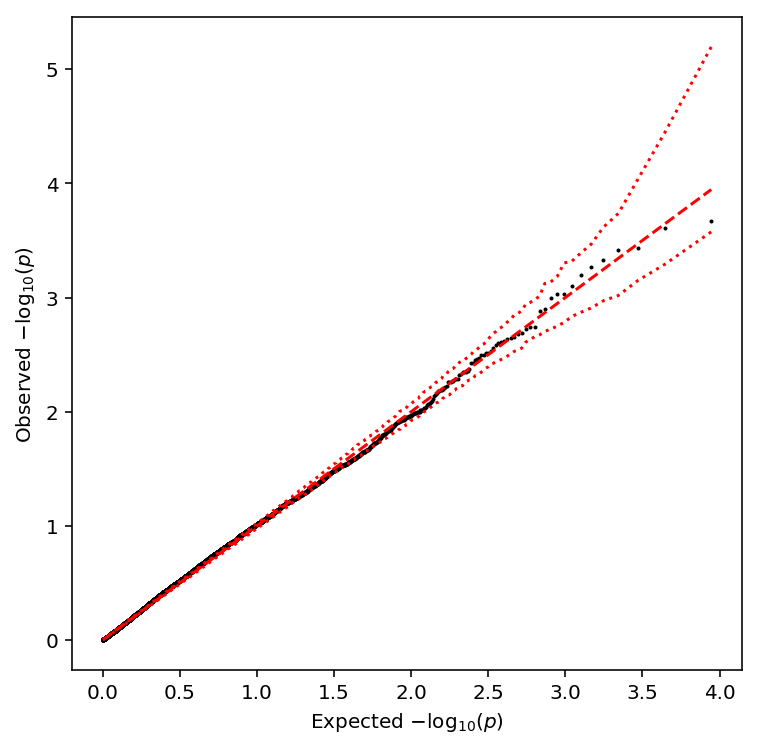
Take QTLs at FDR 10%.
cv_qtls['fdr_pass'].sum()
0
Call Fano-QTLs
Estimate the coefficient of variation.
fano = variance_by_ind / mean_by_ind
Normalize the Fano matrix.
fano = fano.transform(lambda x: (x - x.mean()) / x.std(), axis=1).apply(qqnorm, axis=0)
Write out the phenotype file for qtltools. Hold out even chromosomes while
optimizing the power to detect eQTLs.
write_pheno_file(fano, gene_info, '/scratch/midway2/aksarkar/singlecell/scqtl-mapping/zinb/fano.bed', holdout=False)
Index the phenotype file.
Submitted batch job 55772970
Run qtltools.
Submitted batch job 55772971
Read the output.
fano_qtls = read_qtltools_output('scqtl-mapping/zinb/fano')
Check the beta approximation to the permutation p-values.
plot_approx_permutation(fano_qtls)
Plot a QQ plot of the adjusted p-values.
qqplot(fano_qtls)

Take QTLs at FDR 10%.
fano_qtls['fdr_pass'].sum()
0
Explain away variance QTLs
Call variance-QTLs
Regress out mean from variance.
M = mean_by_ind.transform(lambda x: (x - x.mean()) / x.std(), axis=1) V = variance_by_ind.transform(lambda x: (x - x.mean()) / x.std(), axis=1) beta = (M * V).sum(axis=1) / M.shape[1]
Normalize the variance matrix.
resid = ((V - M.mul(beta, axis='index')) .transform(lambda x: (x - x.mean()) / x.std(), axis=1) .apply(qqnorm, axis=0))
Compute principal components of the resid matrix.
covars = pd.DataFrame(skd.PCA(n_components=2).fit(resid).components_, columns=resid.columns) covars.index.name = 'id' covars.to_csv('/scratch/midway2/aksarkar/singlecell/scqtl-mapping/zinb/resid-covars.txt', sep='\t')
Write out the phenotype file for qtltools.
write_pheno_file(resid, gene_info, '/scratch/midway2/aksarkar/singlecell/scqtl-mapping/zinb/resid.bed', holdout=False)
Index the phenotype file.
Submitted batch job 55773126
Run qtltools.
Submitted batch job 55773130
Read the output.
resid_qtls = read_qtltools_output('scqtl-mapping/zinb/resid')
Check the beta approximation to the permutation p-values.
plot_approx_permutation(resid_qtls)
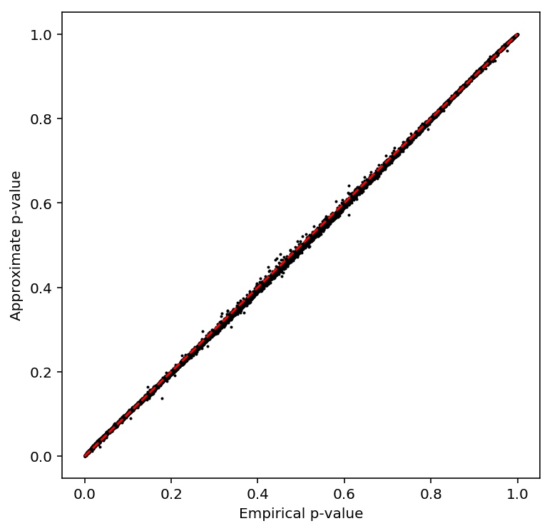
Plot a QQ plot of the adjusted p-values.
qqplot(resid_qtls)
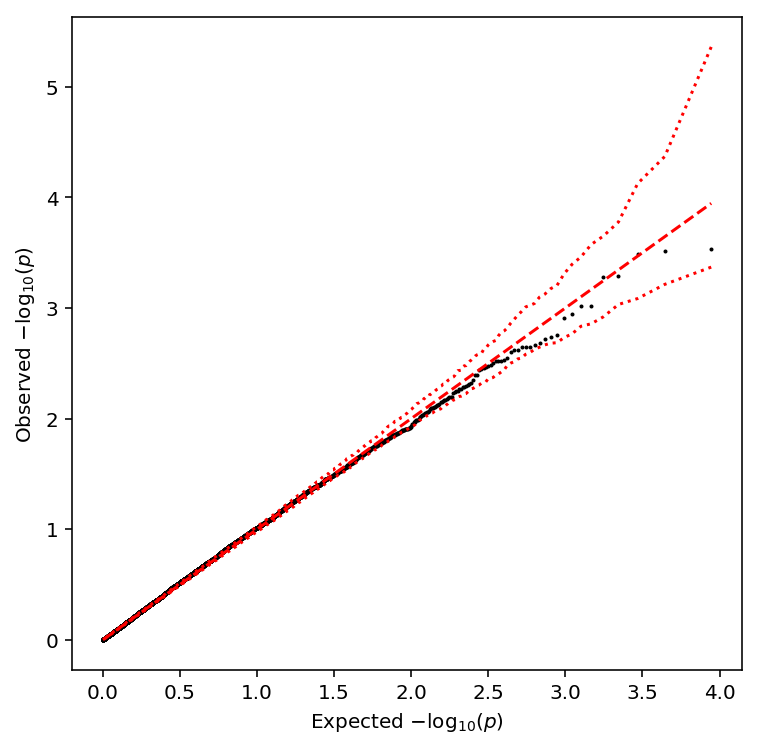
Take QTLs at FDR 10%.
resid_qtls['fdr_pass'].sum()
0
Write out the QTLs
cp covars.txt bulk-covars.txt
cat test-qtl.*.txt | awk 'BEGIN {print "gene", "chr", "start", "end", "strand", "num_vars", "distance", "id", "var_chr", "var_start", "var_end", "df", "dummy", "a", "b", "p_nominal", "beta", "p_empirical", "p_beta"} {print}' | gzip >bulk.txt.gz
cp test.bed.gz /project2/mstephens/aksarkar/projects/singlecell-qtl/data/scqtl-mapping/bulk.bed.gz
cp bulk-covars.txt bulk.txt.gz /project2/mstephens/aksarkar/projects/singlecell-qtl/data/scqtl-mapping/
sbatch --partition=mstephens #!/bin/bash cat >.rsync-filter <<EOF + */ + *.bed.gz + *.txt.gz + *covars* - * EOF function z { pheno=$(basename $1 -qtl.1.txt) dir=$(dirname $(readlink -f $1)) test $1 -nt $dir/$pheno.txt.gz && cat $dir/$pheno-qtl.*.txt | awk 'BEGIN {print "gene", "chr", "start", "end", "strand", "num_vars", "distance", "id", "var_chr", "var_start", "var_end", "df", "dummy", "a", "b", "p_nominal", "beta", "p_empirical", "p_beta"} {print}' | gzip >$dir/$pheno.txt.gz; } export -f z find -name "*-qtl.1.txt" | parallel -j1 z rsync -FFau . /project2/mstephens/aksarkar/projects/singlecell-qtl/data/scqtl-mapping/
Submitted batch job 55776894
QTL browser
Read the QTLs.
prefix = '/project2/mstephens/aksarkar/projects/singlecell-qtl/data/scqtl-mapping/' qtls = (pd.read_table('{}/multmean.txt.gz'.format(prefix), sep=' ') .sort_values('p_beta') .head(n=100)) norm = (pd.read_table('{}/multmean.bed.gz'.format(prefix)) .set_index('pid') .filter(like='NA', axis='columns')) X, Y = extract_qtl_gene_pair(qtls, norm, '/scratch/midway2/aksarkar/singlecell/scqtl-mapping/yri-120-dosages.vcf.gz')
Read the un-normalized phenotypes.
Read the estimated standard errors.
log_mean_sampling_var = pd.read_table('/scratch/midway2/aksarkar/singlecell/power/log_mean-se.txt.gz', index_col=0) log_phi_sampling_var = pd.read_table('/scratch/midway2/aksarkar/singlecell/power/disp-se.txt.gz', index_col=0)
Annotate the genes with the estimated measurement error variances.
W = qtls.align(np.log(mean_by_ind), axis='index', join='inner')[1] Z = qtls.align(log_mean_sampling_var, axis='index', join='inner')[1] qtls['log_mean_error_var'] = Z.mean(axis=1) qtls['log_mean_resid_var'] = W.var(axis=1) - Z.mean(axis=1) W = qtls.align(log_phi, axis='index', join='inner')[1] Z = qtls.align(log_phi_sampling_var, axis='index', join='inner')[1] qtls['log_phi_error_var'] = Z.mean(axis=1) qtls['log_phi_resid_var'] = W.var(axis=1) - Z.mean(axis=1)
Read the un-normalized effect sizes.
mean_stats = pd.read_table('/scratch/midway2/aksarkar/singlecell/power/analytic/mean.txt.gz') disp_stats = pd.read_table('/scratch/midway2/aksarkar/singlecell/power/analytic/disp.txt.gz')
Read the fitted ash models.
with open('fold-change-ash-results.pkl', 'rb') as f: ash_results = pickle.load(f)
Annotate the genes with the posterior marginal effect size.
pandas2ri.activate() mean_stats_subset = mean_stats.merge(qtls.reset_index(), left_on=['gene', 'Unnamed: 0'], right_on=['gene', 'id'], suffixes=['', '_norm']) res = ashr.ash(mean_stats_subset['beta'], mean_stats_subset['se'], fixg=True, g=ash_results['mean'].rx2('fitted_g')) mean_stats_subset['pm'] = np.array(ashr.get_pm(res)) mean_stats_subset['lfsr'] = np.array(ashr.get_lfsr(res)) disp_stats_subset = disp_stats.merge(qtls.reset_index(), left_on=['gene', 'Unnamed: 0'], right_on=['gene', 'id'], suffixes=['', '_norm']) res = ashr.ash(disp_stats_subset['beta'], disp_stats_subset['se'], fixg=True, g=ash_results['disp'].rx2('fitted_g')) disp_stats_subset['pm'] = np.array(ashr.get_pm(res)) disp_stats_subset['lfsr'] = np.array(ashr.get_lfsr(res))
Read the counts.
(mean_stats_subset .dropna() .merge(disp_stats_subset, on=['Unnamed: 0', 'gene', 'log_mean_resid_var', 'log_mean_error_var', 'log_phi_resid_var', 'log_phi_error_var'], suffixes=['_mean', '_disp']) .merge(gene_info, left_on='gene', right_index=True) .rename(columns={'Unnamed: 0': 'id'}) [['gene', 'name', 'id', 'beta_mean', 'pm_mean', 'lfsr_mean', 'beta_disp', 'pm_disp', 'lfsr_disp', 'log_mean_resid_var', 'log_mean_error_var', 'log_phi_resid_var', 'log_phi_error_var']]).head()
gene name id beta_mean pm_mean \ 0 ENSG00000005075 POLR2J rs113524320.chr7.102091990 -0.133238 -0.122851 1 ENSG00000008394 MGST1 rs9332891.chr12.16503789 -0.052297 -0.048002 2 ENSG00000008988 RPS20 rs73679777.chr8.56987059 -0.051499 -0.049712 3 ENSG00000029639 TFB1M rs79805895.chr6.155635281 -0.128963 -0.108330 4 ENSG00000042753 AP2S1 rs10569642.chr19.47352660 -0.045408 -0.035699 lfsr_mean beta_disp pm_disp lfsr_disp log_mean_resid_var \ 0 6.306067e-14 0.156411 0.084523 0.133519 0.018223 1 1.324717e-05 -0.031652 -0.002645 0.888211 0.003425 2 4.717338e-13 -0.104588 -0.006367 0.839005 0.000912 3 1.837927e-05 -0.010367 -0.000462 0.905676 0.025056 4 9.047097e-03 -0.129085 -0.009645 0.800620 0.001014 log_mean_error_var log_phi_resid_var log_phi_error_var 0 0.011825 0.088176 0.038666 1 0.003648 0.098297 0.023262 2 0.003831 0.332455 0.021787 3 0.014941 0.264272 0.140184 4 0.006730 0.295754 0.037082
with sqlite3.connect('/project2/mstephens/aksarkar/projects/singlecell-qtl/browser/browser.db') as conn: (mean_stats_subset .dropna() .merge(disp_stats_subset, on=['Unnamed: 0', 'gene', 'log_mean_resid_var', 'log_mean_error_var', 'log_phi_resid_var', 'log_phi_error_var'], suffixes=['_mean', '_disp']) .merge(gene_info, left_on='gene', right_index=True) .rename(columns={'Unnamed: 0': 'id'}) [['gene', 'name', 'id', 'beta_mean', 'pm_mean', 'lfsr_mean', 'beta_disp', 'pm_disp', 'lfsr_disp', 'log_mean_resid_var', 'log_mean_error_var', 'log_phi_resid_var', 'log_phi_error_var']] .to_sql('qtls', conn, index=False, if_exists='replace')) conn.execute('create index ix_mean_qtls on qtls("gene");') (X.reset_index() .melt(id_vars='index', var_name='ind') .rename(columns={'index': 'gene'}) .to_sql('mean_qtl_geno', conn, index=False, if_exists='replace')) conn.execute('create index ix_mean_qtl_geno on mean_qtl_geno("gene", "ind");') (Y.reset_index() .melt(id_vars='index', var_name='ind') .rename(columns={'index': 'gene', 'value': 'norm'}) .merge( log_mu.reset_index().melt(id_vars='gene', var_name='ind').rename(columns={'value': 'log_mu'}) ) .merge( log_phi.reset_index().melt(id_vars='gene', var_name='ind').rename(columns={'value': 'log_phi'}) ) .merge( logodds.reset_index().melt(id_vars='gene', var_name='ind').rename(columns={'value': 'logodds'}) ) .merge( np.log(mean_by_ind).reset_index().melt(id_vars='gene', var_name='ind').rename(columns={'value': 'log_mean'}) ) .merge( np.sqrt(log_mean_sampling_var).reset_index().melt(id_vars='gene', var_name='ind').rename(columns={'value': 'log_mean_se'}) ) .merge( np.sqrt(log_phi_sampling_var).reset_index().melt(id_vars='gene', var_name='ind').rename(columns={'value': 'log_phi_se'}) ) .to_sql('params', conn, index=False, if_exists='replace')) conn.execute('create index ix_params on params("gene", "ind");') (umi.loc[qtls.index] .reset_index() .melt(id_vars='gene', var_name='sample') .to_sql('umi', conn, index=False, if_exists='replace')) conn.execute('create index ix_umi on umi("gene", "ind");') annotations = pd.read_table('/project2/mstephens/aksarkar/projects/singlecell-qtl/data/scqtl-annotation.txt') annotations['sample'] = annotations.apply(lambda x: '{chip_id}.{experiment:08d}.{well}'.format(**dict(x)), axis=1) annotations['size'] = annotations['mol_hs'] (annotations.loc[keep_samples.values.ravel(), ['sample', 'chip_id', 'size']] .to_sql('annotation', con=conn, if_exists='replace')) conn.execute('create index ix_annotation on annotation(chip_id, sample);')
QTL overlap
Replication rates
Read the QTLs and normalized expression matrices.
prefix = '/project2/mstephens/aksarkar/projects/singlecell-qtl/data/scqtl-mapping/' qtls = {pheno: [pd.read_table('{}/{}.txt.gz'.format(prefix, pheno), sep=' '), pd.read_table('{}/{}.bed.gz'.format(prefix, pheno)).set_index('pid').filter(like='NA', axis='columns')] for pheno in ['bulk', 'zinb/mean', 'zinb/multmean', 'zinb/variance', 'zinb/cv', 'zinb/fano']}
Read covariates.
base = pathlib.Path('/project2/mstephens/aksarkar/projects/singlecell-qtl/data/scqtl-mapping/') covars = [pd.read_table(base / '{}-covars.txt'.format(f), sep='\s+', engine='python', index_col=0) for f in ('bulk', 'zinb/mean', 'zinb/multmean', 'zinb/variance')]
The bulk QTL gene names need to be munged.
qtls['bulk'][0]['gene'] = qtls['bulk'][0]['gene'].apply(lambda x: x.split('.')[0]) qtls['bulk'][1].index = [x.split('.')[0] for x in qtls['bulk'][1].index]
Compute the gene-level FDR filter.
for k in qtls: qtls[k][0]['fdr_pass'] = bh(qtls[k][0]['p_beta']) < 0.1
Estimate replication rates for mean QTLs.
pd.options.display.float_format = '{:.3g}'.format pairwise_replication( qtls, phenos=['bulk', 'zinb/mean', 'zinb/multmean'], ticks=['Bulk', 'Mean', 'log mean'], covars=covars[:3])
Bulk Mean log mean Bulk 100 79 78.9 Mean 80.4 100 100 log mean 82 100 100
Estimate the rate at which variance QTLs replicate as mean QTLs (and vice versa).
pairwise_replication(qtls,
phenos=['zinb/mean', 'zinb/variance', 'zinb/cv', 'zinb/fano'],
ticks=['Mean', 'Variance', 'CV', 'Fano'],
covars=[covars[1], covars[3], None, None])
Mean Variance CV Fano Mean 100 85.1 42.6 66.4 Variance 100 100 100 100 CV 100 100 100 100 Fano 100 100 100 100
Relationship of \(p\)-values, effect sizes, and expression levels
Compute relative abundance per individual.
log_mu = pd.read_table('/project2/mstephens/aksarkar/projects/singlecell-qtl/data/density-estimation/design1/zi2-log-mu.txt.gz', index_col=0, sep=' ') logodds = pd.read_table('/project2/mstephens/aksarkar/projects/singlecell-qtl/data/density-estimation/design1/zi2-logodds.txt.gz', index_col=0, sep=' ') abundance = log_mu - np.log1p(np.exp(logodds)) abundance -= sp.logsumexp(abundance, axis=0) abundance /= np.log(2)
Investigate whether variance QTL \(p\)-values are correlated with relative abundance.
variance_qtls = qtls['zinb/variance'][0] thresh_pass = variance_qtls['p_beta'] < 1e-2 var_qtl_abundance, var_qtl_stats = abundance.align(variance_qtls[thresh_pass].set_index('gene'), axis='index', join='inner') fdr_pass = var_qtl_stats['fdr_pass']
Count how many variance QTLs have \(p < 10^{-2}\)
thresh_pass.sum()
121
plt.clf() plt.errorbar(x=var_qtl_abundance.mean(axis=1), y=-np.log10(var_qtl_stats['p_beta']), xerr=var_qtl_abundance.std(axis=1), fmt='none', label=None, lw=1, ecolor='.8', zorder=-1) plt.scatter(x=var_qtl_abundance[fdr_pass].mean(axis=1), y=-np.log10(var_qtl_stats[fdr_pass]['p_beta']), c='r', s=4, label='FDR 10%') plt.scatter(x=var_qtl_abundance[~fdr_pass].mean(axis=1), y=-np.log10(var_qtl_stats[~fdr_pass]['p_beta']), c='k', s=4, label='p < 0.01') plt.legend(loc='upper left', frameon=False) plt.xlabel('$\log_2(\mathrm{relative\ abundance})$') _ = plt.ylabel('Variance QTL $-\log_{10}(p)$')
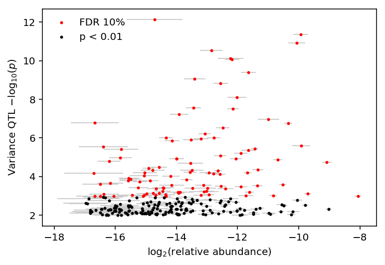
Make sure our effect sizes match qtltools.
variance = qtls['zinb/variance'][1] Xv, Yv = extract_qtl_gene_pair(variance_qtls[thresh_pass], variance, dosages='/scratch/midway2/aksarkar/singlecell/scqtl-mapping/yri-120-dosages.vcf.gz') Cv = pd.read_table('/project2/mstephens/aksarkar/projects/singlecell-qtl/data/scqtl-mapping/variance-covars.txt', index_col=0) Cv = Cv.align(Xv, axis='columns', join='inner')[0] my_var_qtl_stats = replication_tests(Xv, Yv, Cv) my_var_qtl_stats.merge(variance_qtls, on='gene').apply(lambda x: abs(x['beta_x'] - x['beta_y']), axis=1).describe()
count 121 mean 0.0904 std 0.105 min 0.00246 25% 0.0255 50% 0.0601 75% 0.132 max 0.867 dtype: float64
Look at the gene with max difference in estimated effect size.
my_var_qtl_stats.iloc[my_var_qtl_stats.merge(variance_qtls, on='gene').apply(lambda x: abs(x['beta_x'] - x['beta_y']), axis=1).idxmax()]
beta 20.3 gene ENSG00000079102 p 0.157 se 14.4 Name: 116, dtype: object
Estimate standard errors via the bootstrap.
var_qtl_stats['bootstrap_se'] = bootstrap_se(Xv, Yv, Cv) var_qtl_stats['se'] = my_var_qtl_stats.set_index('gene')['se']
Investigate whether analytic SEs are reasonable:
var_qtl_stats['se'].describe()
count 121 mean 0.18 std 1.3 min 0.00832 25% 0.0311 50% 0.0447 75% 0.078 max 14.4 Name: se, dtype: float64
var_qtl_stats['bootstrap_se'].describe()
count 121 mean 1.22 std 9.12 min 0.0995 25% 0.178 50% 0.217 75% 0.285 max 100 Name: bootstrap_se, dtype: float64
Plot analytic SEs against bootstrap SEs.
plt.clf() plt.gcf().set_size_inches(3, 3) plt.scatter(var_qtl_stats['se'], var_qtl_stats['bootstrap_se'], s=1, c='k') plt.plot([0, 1], [0, 1], c='r', ls=':', lw=1) plt.xlim([0, 1]) plt.ylim([0, 1]) plt.xlabel('Analytic SE') _ = plt.ylabel('Bootstrap SE')

Compute \(z\)-scores using the bootstrap SEs.
var_qtl_stats['z'] = var_qtl_stats['beta'] / var_qtl_stats['bootstrap_se']
Compute a \(z\)-score from the estimated effect size and the \(p\)-value.
var_qtl_stats['isf_z'] = np.sign(var_qtl_stats['beta']) * np.sqrt(st.chi2(1).isf(var_qtl_stats['p_nominal']))
Plot bootstrap \(z\)-scores against inverse-transformed \(z\)-scores.
plt.clf() plt.gcf().set_size_inches(3, 3) plt.scatter(var_qtl_stats['z'], var_qtl_stats['isf_z'], s=3, c='k') plt.axhline(y=0, c='k', lw=1) plt.axvline(x=0, c='k', lw=1) plt.plot([-15, 15], [-15, 15], c='r', ls=':', lw=1) plt.xlim([-15, 15]) plt.ylim([-15, 15]) plt.xlabel('Bootstrap $z$-score') _ = plt.ylabel('Inverse CDF $z$-score')
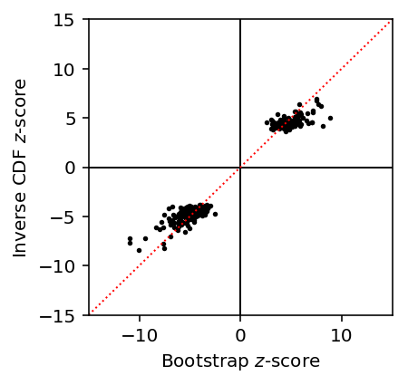
Investigate whether \(z\)-scores based on bootstrap SEs agree with permutation \(p\)-values.
plt.clf() plt.scatter(-np.log10(var_qtl_stats[fdr_pass]['p_beta']), var_qtl_stats[fdr_pass]['z'], c='r', label='FDR 10%', s=4) plt.scatter(-np.log10(var_qtl_stats[~fdr_pass]['p_beta']), var_qtl_stats[~fdr_pass]['z'], c='k', label='p < 0.01', s=4) plt.xlabel('Variance QTL $-\log_{10}(p)$') plt.ylabel('Variance QTL $z$-score')
Text(0,0.5,'Variance QTL $z$-score')
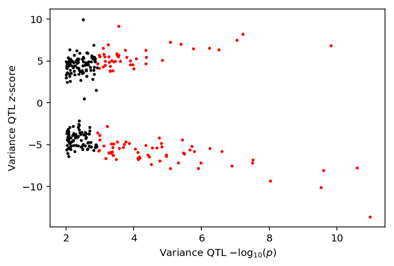
Investigate whether variance QTL \(z\)-scores are correlated with relative abundance.
var_qtl_abundance = var_qtl_abundance.align(var_qtl_stats, axis='index', join='inner')[0]
plt.clf() plt.errorbar(x=var_qtl_abundance.mean(axis=1), y=var_qtl_stats['z'], xerr=var_qtl_abundance.std(axis=1), fmt='none', label=None, lw=1, ecolor='.8', zorder=1) plt.scatter(x=var_qtl_abundance[fdr_pass].mean(axis=1), y=var_qtl_stats[fdr_pass]['z'], c='r', s=2, label='FDR 10%', zorder=2) plt.scatter(x=var_qtl_abundance[~fdr_pass].mean(axis=1), y=var_qtl_stats[~fdr_pass]['z'], c='k', s=2, label='p < 0.01', zorder=2) plt.legend(frameon=False) plt.axhline(y=0, c='k') plt.xlabel('$\log_2(\mathrm{relative\ abundance})$') _ = plt.ylabel('Variance QTL $z$-score')

Investigate whether variance QTL \(z\)-scores are correlated with mean QTL \(z\)-scores.
Xm, Ym = extract_qtl_gene_pair(variance_qtls[thresh_pass], qtls['zinb/mean'][1], dosages='/scratch/midway2/aksarkar/singlecell/scqtl-mapping/yri-120-dosages.vcf.gz') Cm = covars[1] Cm = Cm.align(Xm, axis='columns', join='inner')[0] var_qtl_stats['mean_beta'] = replication_tests(Xm, Ym, Cm).set_index('gene')['beta'] var_qtl_stats['mean_z'] = var_qtl_stats['mean_beta'] / bootstrap_se(Xm, Ym, Cm)
Plot variance QTL \(z\)-scores against pooled QTL \(z\)-scores.
lim = [-12, 12] plt.clf() plt.gcf().set_size_inches(3, 3) plt.plot(lim, lim, c='r', ls=':', lw=1) plt.scatter(var_qtl_stats[fdr_pass]['z'], var_qtl_stats[fdr_pass]['mean_z'], c='r', s=3, label='FDR 10%') plt.scatter(var_qtl_stats[~fdr_pass]['z'], var_qtl_stats[~fdr_pass]['mean_z'], c='k', s=3, label='$p < 10^{-2}$') plt.legend(frameon=False, markerscale=2, loc=(-.01, .75)) plt.axhline(y=0, c='k', lw=1) plt.axvline(x=0, c='k', lw=1) plt.xlim(lim) plt.ylim(lim) plt.xlabel('vQTL $z$-score') _ = plt.ylabel('eQTL $z$-score')
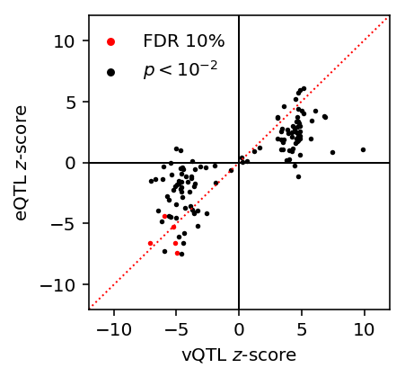
Compute the same in the other direction.
mean_qtl_stats = qtls['zinb/mean'][0] mean_qtl_stats = mean_qtl_stats[mean_qtl_stats['fdr_pass']].copy() X, Y = extract_qtl_gene_pair(mean_qtl_stats, qtls['zinb/mean'][1], dosages='/scratch/midway2/aksarkar/singlecell/scqtl-mapping/yri-120-dosages.vcf.gz') z = mean_qtl_stats.set_index('gene')['beta'] / bootstrap_se(X, Y, Cm) X, Y = extract_qtl_gene_pair(mean_qtl_stats, qtls['zinb/variance'][1], dosages='/scratch/midway2/aksarkar/singlecell/scqtl-mapping/yri-120-dosages.vcf.gz') vz = replication_tests(X, Y, Cv).set_index('gene')['beta'] / bootstrap_se(X, Y, Cv) Xb, Yb = extract_qtl_gene_pair(mean_qtl_stats, qtls['bulk'][1], dosages='/scratch/midway2/aksarkar/singlecell/scqtl-mapping/yri-120-dosages.vcf.gz') Cb = pd.read_table('/project2/mstephens/aksarkar/projects/singlecell-qtl/data/scqtl-mapping/bulk-covars.txt', sep=r'\s+', engine='python') Cb = Cb.align(Xb, axis='columns', join='inner')[0] bulk_z = replication_tests(Xb, Yb, Cb).set_index('gene')['beta'] / bootstrap_se(Xb, Yb, Cb) mean_qtl_stats = mean_qtl_stats.set_index('gene') mean_qtl_stats['z'] = z mean_qtl_stats['var_z'] = vz mean_qtl_stats['bulk_z'] = bulk_z mean_qtl_stats['var_fdr_pass'] = mean_qtl_stats.index.isin(fdr_pass[fdr_pass].index)
Plot mean vs. variance \(z\)-scores at eQTL SNP-gene pairs.
lim = [-12, 12] plt.clf() plt.gcf().set_size_inches(3, 3) plt.plot(lim, lim, c='r', ls=':', lw=1) plt.scatter(mean_qtl_stats.loc[mean_qtl_stats['var_fdr_pass'], 'var_z'], mean_qtl_stats.loc[mean_qtl_stats['var_fdr_pass'], 'z'], c='r', s=3, label='vQTL') plt.scatter(mean_qtl_stats.loc[~mean_qtl_stats['var_fdr_pass'], 'var_z'], mean_qtl_stats.loc[~mean_qtl_stats['var_fdr_pass'], 'z'], c='k', s=3, label='Not vQTL') plt.legend(frameon=False, markerscale=2, loc=(-.01, .75)) plt.axhline(y=0, c='k', lw=1) plt.axvline(x=0, c='k', lw=1) plt.xlim(lim) plt.ylim(lim) plt.xlabel('vQTL $z$-score') _ = plt.ylabel('eQTL $z$-score')
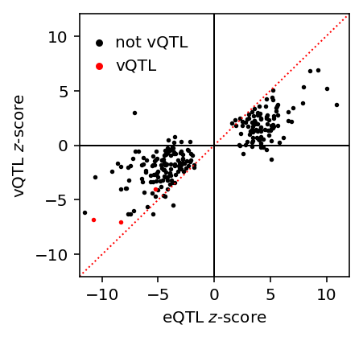
Plot single cell eQTL \(z\)-scores against bulk eQTL \(z\)-scores.
lim = [-12, 12] plt.clf() plt.gcf().set_size_inches(3, 3) plt.plot(lim, lim, c='r', ls=':', lw=1) plt.scatter(mean_qtl_stats['z'], mean_qtl_stats['bulk_z'], c='k', s=3) plt.axhline(y=0, c='k', lw=1) plt.axvline(x=0, c='k', lw=1) plt.xlim(lim) plt.ylim(lim) plt.xlabel('Single cell eQTL $z$-score') _ = plt.ylabel('Bulk eQTL $z$-score')
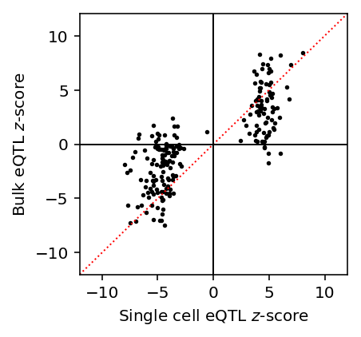
Joint distribution of summary statistics
Read the nominal summary statistics.
stats = {x: pd.read_table('/project2/mstephens/aksarkar/projects/singlecell-qtl/data/power/{}.txt.gz'.format(x), index_col=0) for x in ('bulk', 'mean', 'variance')}
Compute \(z\)-scores.
for k in stats: stats[k]['z'] = stats[k]['beta'] / stats[k]['se']
Munge the bulk gene names.
stats['bulk']['gene'] = [x.split('.')[0] for x in stats['bulk']['gene']]
Munge the index names.
for k in stats: stats[k].index.name = 'id'
Plot the joint distribution of bulk/mean \(z\)-scores.
J = stats['mean'].reset_index().merge(stats['bulk'].reset_index(), on=['id', 'gene'])[['z_x', 'z_y']] plt.clf() plt.gcf().set_size_inches(3, 4) plt.hexbin(J['z_x'], J['z_y'], gridsize=30, extent=[-10, 10, -10, 10], bins='log', cmap=colorcet.cm['gray_r']) plt.gca().set_aspect('equal') plt.xlim(-10, 10) plt.ylim(-10, 10) plt.plot(plt.ylim(), plt.ylim(), c='r', ls=':', lw=1) cb = plt.colorbar(orientation='horizontal') cb.set_label('$\log_{10}$ number of SNP-gene pairs') plt.xlabel('Single cell eQTL $z$-score') plt.ylabel('Bulk eQTL $z$-score') plt.tight_layout()
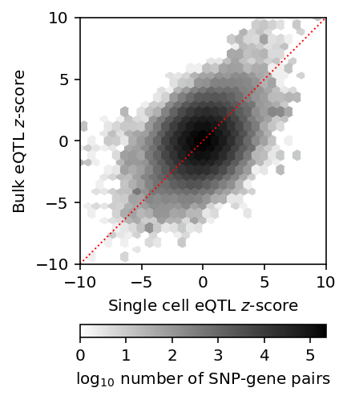
Plot single cell eQTL \(z\)-scores against bulk eQTL \(z\)-scores.
J = (stats['mean'] .reset_index() .merge(qtls['mean'][0][qtls['mean'][0]['fdr_pass']], on=['id', 'gene']) [['id', 'gene', 'beta_x', 'se']] .merge(stats['bulk'].reset_index(), on=['id', 'gene'])) lim = [-12, 12] plt.clf() plt.gcf().set_size_inches(3, 3) plt.plot(lim, lim, c='r', ls=':', lw=1) plt.scatter(J['beta_x'] / J['se_x'], J['beta'] / J['se_y'], c='k', s=3) plt.axhline(y=0, c='k', lw=1) plt.axvline(x=0, c='k', lw=1) plt.xlim(lim) plt.ylim(lim) plt.xlabel('Single cell eQTL $z$-score') _ = plt.ylabel('Bulk eQTL $z$-score')
Plot the joint distribution of mean/variance \(z\)-scores.
J = stats['mean'].reset_index().merge(stats['variance'].reset_index(), on=['id', 'gene'])[['z_x', 'z_y']] plt.clf() plt.gcf().set_size_inches(3, 4) plt.hexbin(J['z_x'], J['z_y'], gridsize=30, extent=[-10, 10, -10, 10], bins='log', cmap=colorcet.cm['gray_r']) plt.gca().set_aspect('equal') plt.xlim(-12, 12) plt.ylim(-12, 12) plt.plot(plt.ylim(), plt.ylim(), c='r', ls='--', lw=1) cb = plt.colorbar(orientation='horizontal') cb.set_label('$\log_{10}$ number of SNP-gene pairs') plt.xlabel('Single cell eQTL $z$-score') plt.ylabel('vQTL $z$-score') plt.tight_layout()
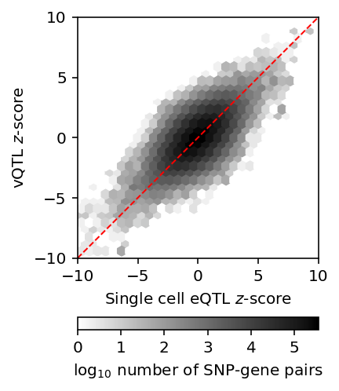
Plot the significant SC vQTL \(z\)-scores, and their corresponding \(z\)-score for the mean.
J = (stats['variance'] .reset_index() .merge(qtls['variance'][0][qtls['variance'][0]['fdr_pass']], on=['id', 'gene']) [['id', 'gene', 'beta_x', 'se']] .merge(stats['mean'].reset_index(), on=['id', 'gene'])) lim = [-12, 12] plt.clf() plt.gcf().set_size_inches(3, 3) plt.plot(lim, lim, c='r', ls=':', lw=1) plt.scatter(J['beta_x'] / J['se_x'], J['beta'] / J['se_y'], c='k', s=3) plt.axhline(y=0, c='k', lw=1) plt.axvline(x=0, c='k', lw=1) plt.xlim(lim) plt.ylim(lim) plt.xlabel('vQTL $z$-score') _ = plt.ylabel('eQTL $z$-score')
Plot the significant SC eQTL \(z\)-scores, and their corresponding \(z\)-score for the mean.
J = (stats['mean'] .reset_index() .merge(qtls['mean'][0][qtls['mean'][0]['fdr_pass']], on=['id', 'gene']) [['id', 'gene', 'beta_x', 'se']] .merge(stats['variance'].reset_index(), on=['id', 'gene']) .merge(qtls['variance'][0], on=['id', 'gene'], suffixes=['_y', '_z'], how='left') .fillna(False)) lim = [-12, 12] plt.clf() plt.gcf().set_size_inches(3, 3) plt.plot(lim, lim, c='r', ls=':', lw=1) colors = {True: 'r', False: 'k'} labels = {True: 'vQTL', False: 'not vQTL'} for k, g in J.groupby('fdr_pass'): plt.scatter(g['beta_x'] / g['se_x'], g['beta_y'] / g['se_y'], c=colors[k], s=3, label=labels[k]) plt.legend(frameon=False, markerscale=2, handletextpad=0, loc=(-.01, .75)) plt.axhline(y=0, c='k', lw=1) plt.axvline(x=0, c='k', lw=1) plt.xlim(lim) plt.ylim(lim) plt.ylabel('vQTL $z$-score') _ = plt.xlabel('eQTL $z$-score')
Predicting mean QTLs from variance QTLs
As we change the threshold for calling mean (variance) QTLs, track the precision and recall of variance (mean) QTLs.
plt.clf() plt.gcf().set_size_inches(3, 3) Y, P = qtls['mean'][0]['fdr_pass'].align(qtls['variance'][0]['p_beta'].dropna(), join='inner') p, r, _ = sklearn.metrics.precision_recall_curve(Y.astype(int), -np.log(P)) auprc_mean_var = sklearn.metrics.average_precision_score(Y.astype(int), -np.log(P)) plt.plot(r[::10], p[::10], lw=1, c='k', label='Variance') Y, P = qtls['variance'][0]['fdr_pass'].align(qtls['mean'][0]['p_beta'].dropna(), join='inner') p, r, _ = sklearn.metrics.precision_recall_curve(Y.astype(int), -np.log(P)) auprc_var_mean = sklearn.metrics.average_precision_score(Y.astype(int), -np.log(P)) plt.plot(r[::10], p[::10], lw=1, c='r', label='Mean') plt.legend(frameon=False) plt.xlabel('Recall of QTLs at FDR 10%') _ = plt.ylabel('Precision of QTLs at FDR 10%')
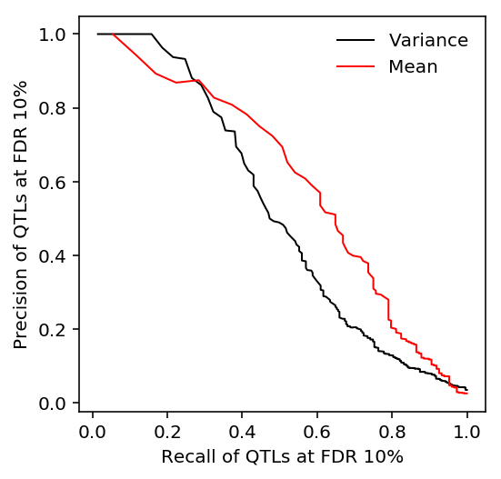
Tabulate the AUPRC.
auprc_mean_var, auprc_var_mean
(0.5212419583724434, 0.6044457996921822)
Track sensitivity and specificity of mean QTLs.
plt.clf() plt.gcf().set_size_inches(3, 3) Y, P = qtls['mean'][0]['fdr_pass'].align(qtls['variance'][0]['p_beta'].dropna(), join='inner') fpr, tpr, _ = sklearn.metrics.roc_curve(Y.astype(int), -np.log(P)) auroc_mean_var = sklearn.metrics.roc_auc_score(Y.astype(int), -np.log(P)) plt.plot(fpr[::10], tpr[::10], lw=1, c='k', label='Variance') Y, P = qtls['variance'][0]['fdr_pass'].align(qtls['mean'][0]['p_beta'].dropna(), join='inner') fpr, tpr, _ = sklearn.metrics.roc_curve(Y.astype(int), -np.log(P)) auroc_var_mean = sklearn.metrics.roc_auc_score(Y.astype(int), -np.log(P)) plt.plot(fpr[::10], tpr[::10], lw=1, c='r', label='Mean') plt.legend(frameon=False) plt.xlabel('False positive rate of QTLs at FDR 10%') _ = plt.ylabel('True positive rate of QTLs at FDR 10%')
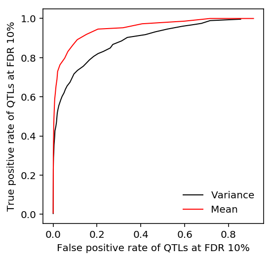
Tabulate the AUROC.
auroc_mean_var, auroc_var_mean
(0.8968614143396433, 0.9555166119581557)
Find the threshold at which 90% of eQTLs are recovered.
Y, P = qtls['variance'][0].set_index('gene')['fdr_pass'].align(qtls['mean'][0].set_index('gene')['p_beta'].dropna(), join='inner') fpr, tpr, thresh = sklearn.metrics.roc_curve(Y.astype(int), -np.log(P)) np.exp(-thresh[np.where(tpr <= 0.9)].min())
0.05222859999999999
Find the vQTLs which are not predictive of eQTLs.
true_negatives = Y[np.logical_and(Y, -np.log(P) < thresh[np.where(tpr <= 0.9)].min())].to_frame().merge(gene_info, left_index=True, right_index=True)[['name']] true_negatives
name gene ENSG00000122574 WIPF3 ENSG00000112367 FIG4 ENSG00000121481 RNF2 ENSG00000214194 LINC00998 ENSG00000133935 C14orf1 ENSG00000243725 TTC4 ENSG00000132849 INADL ENSG00000171130 ATP6V0E2 ENSG00000129518 EAPP ENSG00000182400 TRAPPC6B ENSG00000182117 NOP10 ENSG00000068024 HDAC4 ENSG00000169714 CNBP ENSG00000133030 MPRIP ENSG00000108528 SLC25A11